Selecting training and validation sets
Isobel Beasley
Last updated: 2026-11-02
Checks: 6 1
Knit directory:
genomics_ancest_disease_dispar/
This reproducible R Markdown analysis was created with workflowr (version 1.7.2). The Checks tab describes the reproducibility checks that were applied when the results were created. The Past versions tab lists the development history.
Great! Since the R Markdown file has been committed to the Git repository, you know the exact version of the code that produced these results.
Great job! The global environment was empty. Objects defined in the global environment can affect the analysis in your R Markdown file in unknown ways. For reproduciblity it’s best to always run the code in an empty environment.
The command set.seed(20220216) was run prior to running
the code in the R Markdown file. Setting a seed ensures that any results
that rely on randomness, e.g. subsampling or permutations, are
reproducible.
Great job! Recording the operating system, R version, and package versions is critical for reproducibility.
- abstract_embedding_variation
- methods_embedding_variation
To ensure reproducibility of the results, delete the cache directory
21_training_set_selection_cache and re-run the analysis. To
have workflowr automatically delete the cache directory prior to
building the file, set delete_cache = TRUE when running
wflow_build() or wflow_publish().
Great job! Using relative paths to the files within your workflowr project makes it easier to run your code on other machines.
Great! You are using Git for version control. Tracking code development and connecting the code version to the results is critical for reproducibility.
The results in this page were generated with repository version d0a4282. See the Past versions tab to see a history of the changes made to the R Markdown and HTML files.
Note that you need to be careful to ensure that all relevant files for
the analysis have been committed to Git prior to generating the results
(you can use wflow_publish or
wflow_git_commit). workflowr only checks the R Markdown
file, but you know if there are other scripts or data files that it
depends on. Below is the status of the Git repository when the results
were generated:
Ignored files:
Ignored: .DS_Store
Ignored: .Rhistory
Ignored: .Rproj.user/
Ignored: .venv/
Ignored: BioC.dtd
Ignored: Claude outputs/
Ignored: FormatConverter.jar
Ignored: FormatConverter.zip
Ignored: analysis/.DS_Store
Ignored: analysis/21_training_set_selection_cache/
Ignored: analysis/figure/
Ignored: ancestry_dispar_env/
Ignored: code/.DS_Store
Ignored: code/extract_text/__pycache__/
Ignored: code/full_text_conversion/.DS_Store
Ignored: code/full_text_conversion/__pycache__/
Ignored: code/pop_desc_processing/.DS_Store
Ignored: code/text_embeddings/__pycache__/
Ignored: code/text_mining_models/__pycache__/
Ignored: data/.DS_Store
Ignored: data/cdc/
Ignored: data/cohort/
Ignored: data/europe_pmc/
Ignored: data/gbd/.DS_Store
Ignored: data/gbd/IHME-GBD_2021_DATA-d8cf695e-1.csv
Ignored: data/gbd/IHME-GBD_2023_DATA-73cc01fd-1.csv
Ignored: data/gbd/gbd_2019_california_percent_deaths.csv
Ignored: data/gbd/ihme_gbd_2019_global_disease_burden_rate_all_ages.csv
Ignored: data/gbd/ihme_gbd_2019_global_paf_rate_percent_all_ages.csv
Ignored: data/gbd/ihme_gbd_2021_global_disease_burden_rate_all_ages.csv
Ignored: data/gbd/ihme_gbd_2021_global_paf_rate_percent_all_ages.csv
Ignored: data/gwas_catalog/
Ignored: data/icd/.DS_Store
Ignored: data/icd/2025AA/
Ignored: data/icd/IHME_GBD_2019_COD_CAUSE_ICD_CODE_MAP_Y2020M10D15.XLSX
Ignored: data/icd/IHME_GBD_2019_NONFATAL_CAUSE_ICD_CODE_MAP_Y2020M10D15.XLSX
Ignored: data/icd/archived_assorted_map_files/
Ignored: data/icd/icd102019enMeta/
Ignored: data/icd/lancet_conditions_icd10.xlsx
Ignored: data/icd/manual_disease_map.xlsx
Ignored: data/icd/oxo/
Ignored: data/icd/phecode_international_version_unrolled.csv
Ignored: data/icd/phecode_to_icd10_manual_map.xlsx
Ignored: data/icd/~$lancet_conditions_icd10.xlsx
Ignored: data/nih/
Ignored: data/ontology/
Ignored: doccano_venv/
Ignored: figures/
Ignored: output/.DS_Store
Ignored: output/abbreviations/
Ignored: output/abstracts/
Ignored: output/fulltexts/
Ignored: output/gwas_cat/
Ignored: output/gwas_cohorts/
Ignored: output/icd_map/
Ignored: output/intros/
Ignored: output/journal_meta/
Ignored: output/methods/
Ignored: output/results/
Ignored: output/supplement/
Ignored: output/trait_ontology/
Ignored: pubmedbert-cohort-ner-model/
Ignored: pubmedbert-cohort-ner/
Ignored: pubmedbert-grid/
Ignored: renv/
Ignored: rhd_paper_cohorts_sample_n.csv
Ignored: spacy_venv_requirements.txt
Ignored: spacyr_venv/
Ignored: testing_papers.csv
Ignored: testing_papers_cohort_norm.csv
Ignored: training_papers_test.csv
Ignored: training_papers_test_cohort_norm.csv
Untracked files:
Untracked: analysis/compare_cohort_annot.Rmd
Untracked: code/training_set/
Untracked: output/clustering/
Untracked: output/doccano/
Untracked: output/text_mining_predictions/
Untracked: test.R
Unstaged changes:
Modified: analysis/disease_inves_by_ancest.Rmd
Modified: analysis/extract_gwas_cat_sample_sizes.Rmd
Modified: analysis/replication_ancestry_bias.Rmd
Modified: analysis/specific_aims_stats.Rmd
Note that any generated files, e.g. HTML, png, CSS, etc., are not included in this status report because it is ok for generated content to have uncommitted changes.
These are the previous versions of the repository in which changes were
made to the R Markdown
(analysis/21_training_set_selection.Rmd) and HTML
(docs/21_training_set_selection.html) files. If you’ve
configured a remote Git repository (see ?wflow_git_remote),
click on the hyperlinks in the table below to view the files as they
were in that past version.
| File | Version | Author | Date | Message |
|---|---|---|---|---|
| Rmd | d0a4282 | IJbeasley | 2026-11-02 | Update embedding filtering |
| html | 82469ba | IJbeasley | 2026-11-02 | Build site. |
| Rmd | 5478161 | IJbeasley | 2026-11-02 | Update MedCPT embeddings |
| html | 38803e0 | IJbeasley | 2026-11-02 | Build site. |
| Rmd | 44c46dd | IJbeasley | 2026-11-02 | Update training set selection |
| html | 9f5e117 | IJbeasley | 2026-10-19 | Build site. |
| Rmd | a957911 | IJbeasley | 2026-10-19 | Update training set selection page |
| html | b7c3e38 | IJbeasley | 2026-09-11 | Build site. |
| Rmd | 1d697c7 | IJbeasley | 2026-09-11 | Update training set selection page |
library(stringr)
library(readxl)
library(dplyr)
library(ggplot2)
library(plotly)Text embeddings
Get full set of articles
# get only relevant disease studies
gwas_study_info <- data.table::fread(here::here("output/icd_map/gwas_study_gbd_causes.csv"))
gwas_study_info = gwas_study_info |>
dplyr::rename_with(~ gsub(" ", "_", .x))
gwas_study_info =
gwas_study_info |>
filter(include == T)
gwas_study_info <-
gwas_study_info |>
filter(cause != "")
unspecified_stroke_papers <-
gwas_study_info |>
filter(cause == "Stroke") |>
pull(PUBMED_ID) |>
unique()
specified_stroke_papers <-
gwas_study_info |>
filter(PUBMED_ID %in% unspecified_stroke_papers) |>
filter(cause != "Stroke") |>
filter(grepl("stroke|hemorrhage", cause, ignore.case = T)) |>
pull(PUBMED_ID)
unspecified_stroke_papers[!unspecified_stroke_papers %in% specified_stroke_papers][1] 29458411 31209788 32913026 34020725gwas_study_info <-
gwas_study_info |>
filter(cause != "Stroke")
gwas_study_info |> filter(lancet_condition == "") |> distinct(cause) cause
<char>
1: Chronic kidney disease
2: Chronic kidney disease due to glomerulonephritis
3: Cirrhosis and other chronic liver diseases
4: Liver cancer
5: Chronic kidney disease due to other and unspecified causesgwas_study_info <-
gwas_study_info |>
mutate(lancet_condition =
case_when(lancet_condition == "" & cause == "Liver cancer" ~ "NCDs strongly linked to infections",
lancet_condition == "" & grepl("Cirrhosis", cause, ignore.case = T) ~ "NCDs strongly linked to infections",
lancet_condition == "" & grepl("Chronic kidney disease", cause, ignore.case = T) ~ "Diabetes",
TRUE ~ lancet_condition)) |>
distinct(PUBMED_ID,
YEAR,
cause,
lancet_condition,
cause_category)
all_pmids <- gwas_study_info |> pull(PUBMED_ID) |> unique()
all_pmids |> length()[1] 997Get article level text embeddings for extracted text sections
Abstracts, methods, results
source spacyr_venv/bin/activate
python3 code/text_embeddings/get_text_embeddings.py \
-m ncbi/MedCPT-Article-Encoder \
-t output/abstracts \
-o output/clustering/abstracts_
python3 code/text_embeddings/get_text_embeddings.py \
-m ncbi/MedCPT-Article-Encoder \
-t output/methods \
-o output/clustering/methods_
python3 code/text_embeddings/get_text_embeddings.py \
-m ncbi/MedCPT-Article-Encoder \
-t output/results \
-o output/clustering/results_
Abstract embeddings
# get medcpt article embeddings for all disease studies
abstract_embeddings <- data.table::fread(here::here("output/clustering/abstracts_medcpt_embeddings.csv"))
abstract_embeddings <-
abstract_embeddings |>
dplyr::filter(!grepl("PMC", PUBMED_ID))
abstract_embeddings <-
abstract_embeddings |>
filter(PUBMED_ID %in% all_pmids)
abstract_embeddings <-
tibble::column_to_rownames(abstract_embeddings, var = "PUBMED_ID")
abstract_embeddings |> dim() # three articles do not have abstracts [1] 994 768PCA_abstracts <- prcomp(abstract_embeddings,
center = TRUE,
scale. = FALSE)
abstracts_pca_table <-
data.frame(PC1 = PCA_abstracts$x[,1],
PC2 = PCA_abstracts$x[,2],
PC3 = PCA_abstracts$x[,3],
PC4 = PCA_abstracts$x[,4],
PC5 = PCA_abstracts$x[,5],
PC6 = PCA_abstracts$x[,6],
PC7 = PCA_abstracts$x[,7],
PC8 = PCA_abstracts$x[,8],
PC9 = PCA_abstracts$x[,9],
PC10 = PCA_abstracts$x[,10],
PUBMED_ID = as.integer(rownames(abstract_embeddings)))
abstracts_var_exp <- PCA_abstracts$sdev^2 / sum(PCA_abstracts$sdev^2)
data.frame(PC = paste0("PC", 1:length(abstracts_var_exp)),
PC_n = 1:length(abstracts_var_exp),
Variance_Explained = abstracts_var_exp) |>
filter(PC_n <= 30) |>
mutate(PC_n = factor(PC_n, levels = 1:30)) |>
ggplot(aes(x = PC_n, y = Variance_Explained)) +
geom_col() +
ylim(0, 0.1) +
labs(x = "Principal Component",
y = "Proportion of Variance Explained",
title = "Variance explained by each principal component (Abstract embeddings)") +
theme_bw()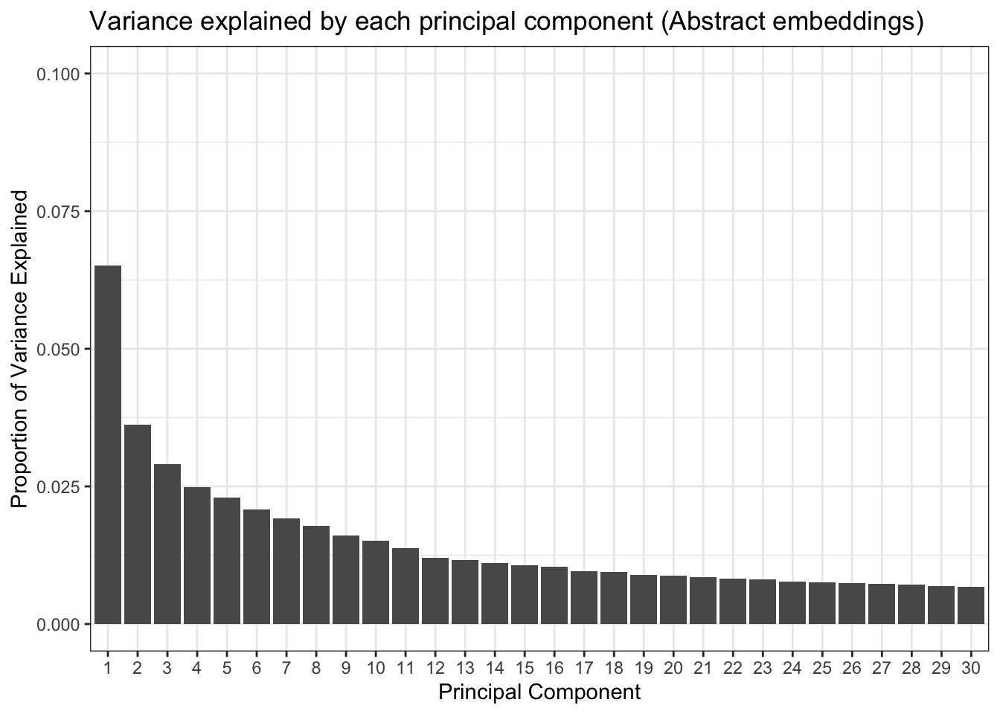
Methods embeddings
# get medcpt article embeddings for all disease studies
methods_embeddings <- data.table::fread(here::here("output/clustering/methods_medcpt_embeddings.csv"))
methods_embeddings <-
methods_embeddings |>
dplyr::filter(!grepl("PMC", PUBMED_ID))
methods_embeddings <- methods_embeddings |>
mutate(PUBMED_ID = str_remove_all(PUBMED_ID,
"_methods|_methods_main|_bioc|_pdf_tei|_main")) |>
filter(!PUBMED_ID %in% c("main_fallback_files",
"failed_files",
"no_files",
"online_only_files")) |>
distinct()
methods_embeddings <-
methods_embeddings |>
filter(PUBMED_ID %in% all_pmids)
# check no duplicates
methods_embeddings |> group_by(PUBMED_ID) |> summarise(n = n()) |> filter(n > 1)# A tibble: 0 × 2
# ℹ 2 variables: PUBMED_ID <chr>, n <int>methods_embeddings <-
tibble::column_to_rownames(methods_embeddings,
var = "PUBMED_ID")
methods_embeddings |> dim()[1] 945 768PCA_methods <- prcomp(methods_embeddings,
center = TRUE,
scale. = FALSE)
methods_pca_table <-
data.frame(PC1 = PCA_methods$x[,1],
PC2 = PCA_methods$x[,2],
PC3 = PCA_methods$x[,3],
PC4 = PCA_methods$x[,4],
PC5 = PCA_methods$x[,5],
PC6 = PCA_methods$x[,6],
PC7 = PCA_methods$x[,7],
PC8 = PCA_methods$x[,8],
PC9 = PCA_methods$x[,9],
PC10 = PCA_methods$x[,10],
PUBMED_ID = as.integer(rownames(methods_embeddings)))
methods_var_exp <- PCA_methods$sdev^2 / sum(PCA_methods$sdev^2)
data.frame(PC = paste0("PC", 1:length(methods_var_exp)),
PC_n = 1:length(methods_var_exp),
Variance_Explained = methods_var_exp) |>
filter(PC_n <= 30) |>
mutate(PC_n = factor(PC_n, levels = 1:30)) |>
ggplot(aes(x = PC_n, y = Variance_Explained)) +
geom_col() +
ylim(0, 0.1) +
labs(x = "Principal Component",
y = "Proportion of Variance Explained",
title = "Variance explained by each principal component (Methods)") +
theme_bw()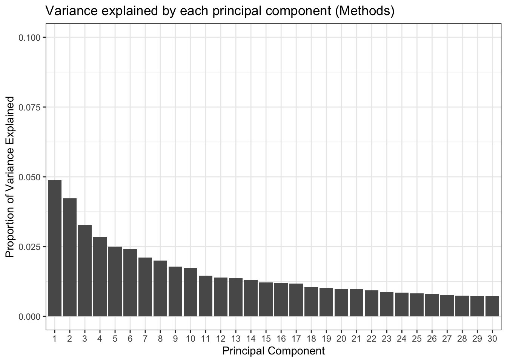
Results embeddings
results_embeddings <- data.table::fread(here::here("output/clustering/results_medcpt_embeddings.csv"))
results_embeddings <-
results_embeddings |>
dplyr::filter(!grepl("PMC", PUBMED_ID)) |>
mutate(PUBMED_ID = str_remove_all(PUBMED_ID,
"_results|_results_main|_bioc_results_main|_pdf_tei|_main|_bioc")) |>
filter(!PUBMED_ID %in% c("main_fallback_files",
"failed_files",
"no_files",
"online_only_files")) |>
distinct()
results_embeddings <-
results_embeddings |>
filter(PUBMED_ID %in% all_pmids)
results_embeddings |> group_by(PUBMED_ID) |> summarise(n = n()) |> filter(n > 1)# A tibble: 0 × 2
# ℹ 2 variables: PUBMED_ID <chr>, n <int>results_embeddings <-
results_embeddings |>
tibble::column_to_rownames(var = "PUBMED_ID")
results_embeddings |> dim()[1] 945 768PCA_results <- prcomp(results_embeddings,
center = TRUE,
scale. = FALSE)
results_pca_table <-
data.frame(PC1 = PCA_results$x[,1],
PC2 = PCA_results$x[,2],
PC3 = PCA_results$x[,3],
PC4 = PCA_results$x[,4],
PC5 = PCA_results$x[,5],
PC6 = PCA_results$x[,6],
PC7 = PCA_results$x[,7],
PC8 = PCA_results$x[,8],
PC9 = PCA_results$x[,9],
PC10 = PCA_results$x[,10],
PUBMED_ID = as.integer(rownames(results_embeddings)))
results_var_exp <- PCA_results$sdev^2 / sum(PCA_results$sdev^2)
data.frame(PC = paste0("PC", 1:length(results_var_exp)),
PC_n = 1:length(results_var_exp),
Variance_Explained = results_var_exp) |>
filter(PC_n <= 30) |>
mutate(PC_n = factor(PC_n, levels = 1:30)) |>
ggplot(aes(x = PC_n, y = Variance_Explained)) +
ylim(0, 0.1) +
geom_col() +
labs(x = "Principal Component",
y = "Proportion of Variance Explained",
title = "Variance explained by each principal component (Results)") +
theme_bw()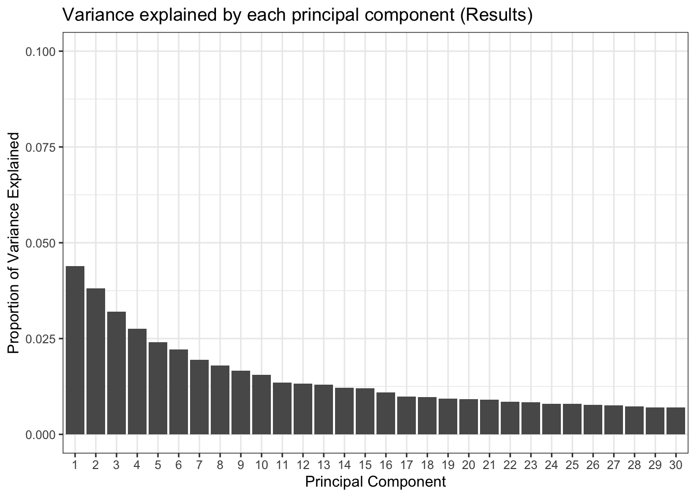
Relationship between results and methods embeddings
full_pca_table <-
inner_join(
results_pca_table |>
dplyr::rename_with(~paste0("results_", .x), contains("PC")),
methods_pca_table |>
dplyr::rename_with(~paste0("methods_", .x), contains("PC")),
by = "PUBMED_ID"
)
# the results and methods embeddings are correlated, but not perfectly. This suggests that the embeddings capture some of the same information, but also some different information.
full_pca_table$PUBMED_ID |> unique() -> matched_pmids
cor(methods_embeddings[as.character(matched_pmids),],
results_embeddings[as.character(matched_pmids),],
method = "spearman"
) |>
diag() |>
summary() Min. 1st Qu. Median Mean 3rd Qu. Max.
0.2029 0.3172 0.3528 0.3563 0.3975 0.5760 cor(full_pca_table$results_PC1,
full_pca_table$methods_PC1,
method = "spearman")[1] 0.1969207cor(full_pca_table$results_PC2,
full_pca_table$methods_PC2,
method = "spearman")[1] -0.5437182cor(full_pca_table$results_PC3,
full_pca_table$methods_PC3,
method = "spearman")[1] -0.07712626full_pca_table |>
ggplot(aes(x = results_PC1, y = methods_PC1)) +
geom_point() +
labs(x = "Results PC1",
y = "Methods PC1") +
theme_bw()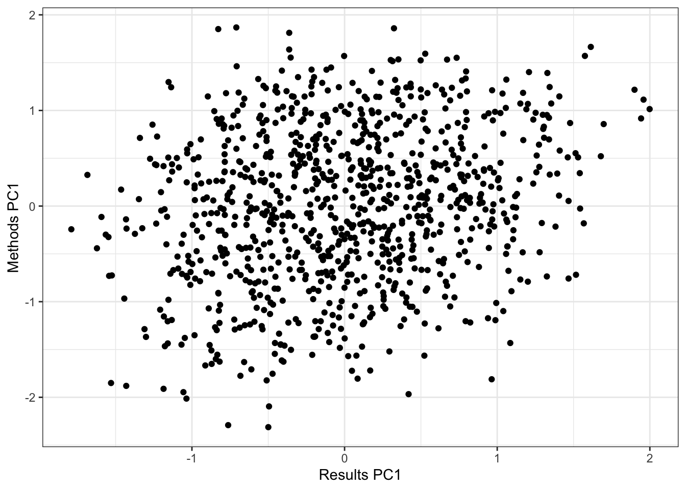
full_pca_table |>
ggplot(aes(x = results_PC2, y = methods_PC2)) +
geom_point() +
labs(x = "Results PC2",
y = "Methods PC2") +
theme_bw()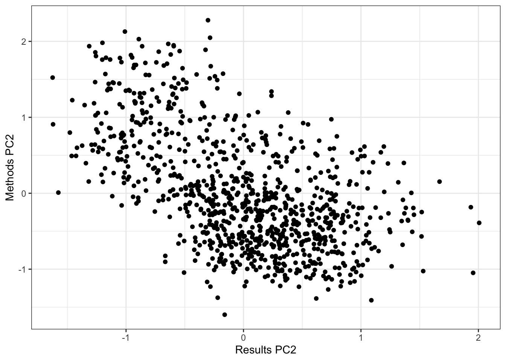
full_pca_table |>
ggplot(aes(x = results_PC3, y = methods_PC3)) +
geom_point() +
labs(x = "Results PC3",
y = "Methods PC3") +
theme_bw()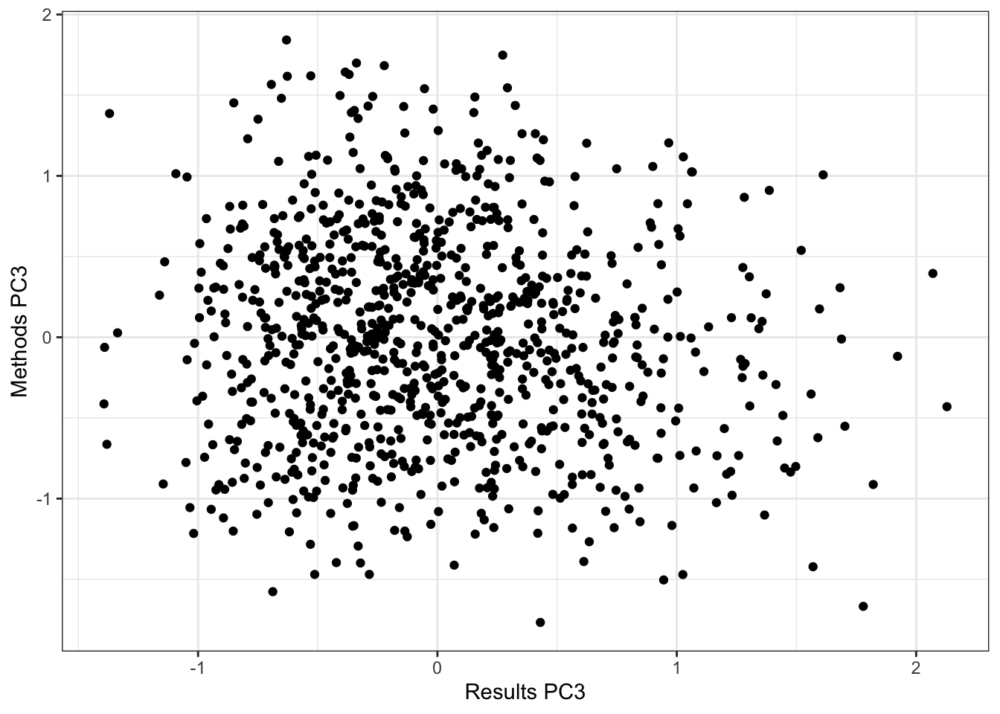
Relationship between abstract and methods embeddings
Methods and abstract embeddings show similar pattern of the proportion variation explained by top PCs. Top PCs for abstracts and methods are correlated, but not perfectly. This suggests that the embeddings capture some of the same information, but also some different information.
full_pca_table <-
inner_join(
abstracts_pca_table |>
dplyr::rename_with(~paste0("abstract_", .x), contains("PC")),
methods_pca_table |>
dplyr::rename_with(~paste0("methods_", .x), contains("PC")),
by = "PUBMED_ID"
)
full_pca_table$PUBMED_ID |> unique() -> matched_pmids
cor(methods_embeddings[as.character(matched_pmids),],
abstract_embeddings[as.character(matched_pmids),],
method = "spearman"
) |>
diag() |>
summary() Min. 1st Qu. Median Mean 3rd Qu. Max.
0.1800 0.3014 0.3428 0.3445 0.3894 0.5779 # abstracts and methods are less correlated than methods and results -
# which makes sense given different sources
cor(full_pca_table$abstract_PC1,
full_pca_table$methods_PC1,
method = "spearman")[1] 0.2998343cor(full_pca_table$abstract_PC2,
full_pca_table$methods_PC2,
method = "spearman")[1] -0.640713cor(full_pca_table$abstract_PC3,
full_pca_table$methods_PC3,
method = "spearman")[1] 0.5074674full_pca_table |>
ggplot(aes(x = abstract_PC1, y = methods_PC1)) +
geom_point() +
labs(x = "Abstract PC1",
y = "Methods PC1") +
theme_bw()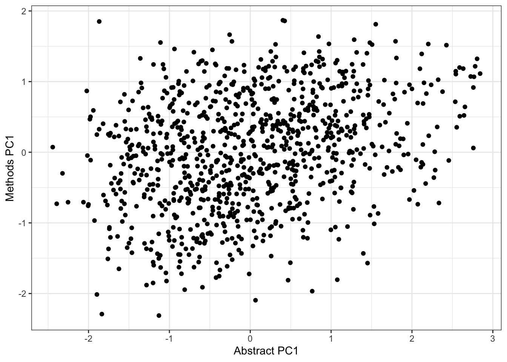
full_pca_table |>
ggplot(aes(x = abstract_PC2, y = methods_PC2)) +
geom_point() +
labs(x = "Abstract PC2",
y = "Methods PC2") +
theme_bw()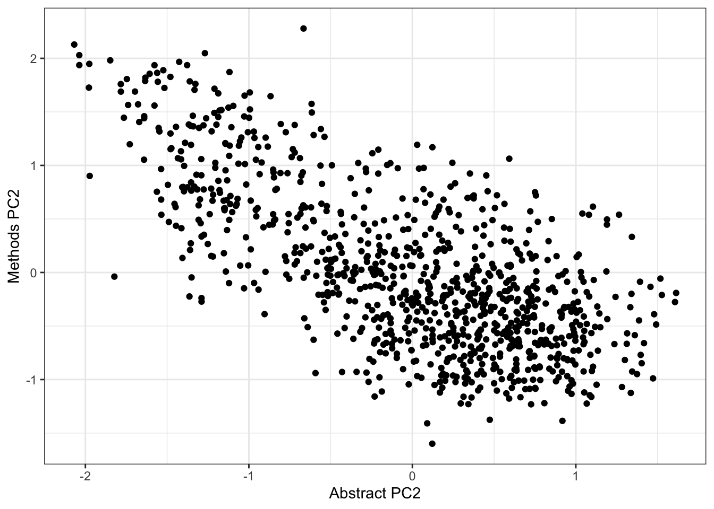
full_pca_table |>
ggplot(aes(x = abstract_PC3, y = methods_PC3)) +
geom_point() +
labs(x = "Abstract PC3",
y = "Methods PC3") +
theme_bw()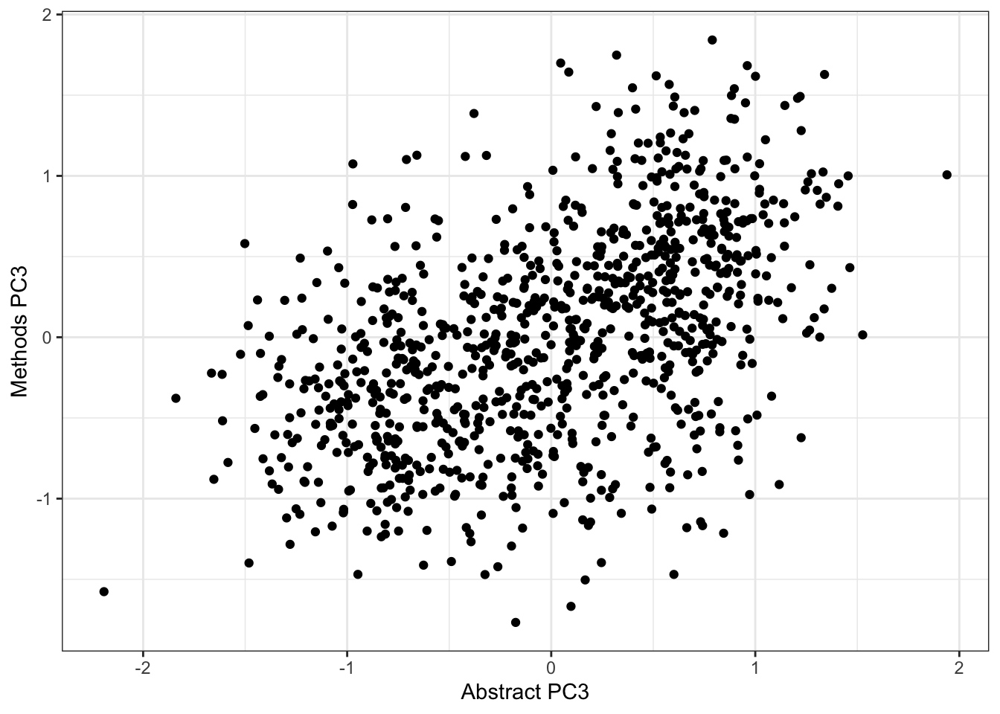
What are the major axes of variation in embeddings for these papers?
Possible sources of variation in embeddings
- Year (Publication Date)
- Condition/s studied
- Journal
- Ancestry of study sample
- Text source
Year
Distribution of GWAS Catalog Text Abstract Embeddings
PC1 clearly separates / clusters GWAS Catalog abstract embeddings by year (higher PC1 score for more recent years).
abstracts_pca_plot_table <-
abstracts_pca_table |>
inner_join(gwas_study_info |>
select(PUBMED_ID,
YEAR),
by = "PUBMED_ID") |>
mutate(YEAR = as.numeric(YEAR)) |>
distinct()
cor(as.numeric(abstracts_pca_plot_table$YEAR),
abstracts_pca_plot_table$PC1,
method = "spearman")[1] 0.4500896cor(as.numeric(abstracts_pca_plot_table$YEAR),
abstracts_pca_plot_table$PC2,
method = "spearman")[1] -0.1742822abstracts_pca_plot_table |>
ggplot(aes(
x = PC1,
y = PC2,
color = YEAR
)) +
geom_point() +
scale_color_viridis_c(
option = "plasma"
) +
labs(
x = paste0("PC1 (", round(100 * abstracts_var_exp[1], digits = 1), "%)"),
y = paste0("PC2 (", round(100 * abstracts_var_exp[2], digits = 1), "%)"),
colour = "Publication Year",
title = "GWAS Catalog abstract embeddings"
) +
theme_bw()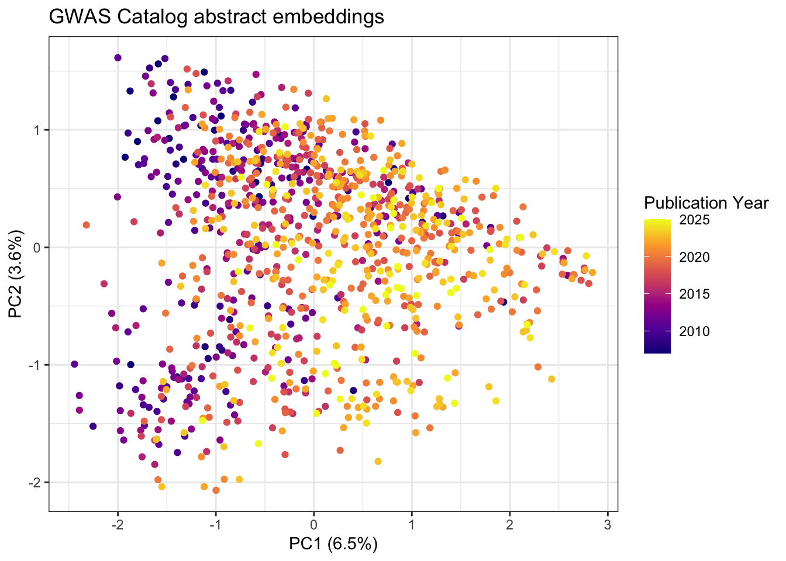
abstracts_pca_plot_table |>
ggplot(aes(x = PC2,
y = PC3,
color = YEAR)) +
geom_point() +
scale_color_viridis_c(
option = "plasma"
) +
labs(x = paste0("PC2 (", round(100 * abstracts_var_exp[2], digits = 1),
"%)"),
y = paste0("PC3 (",
round(100 * abstracts_var_exp[3], digits = 1),
"%)"),
colour = "Publication Year"
) +
labs(title = "GWAS Catalog abstract embeddings") +
theme_bw()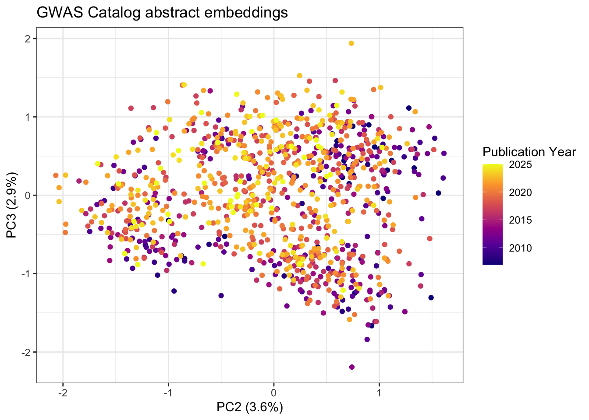
Distribution of GWAS Catalog Text Methods Embeddings
methods_pca_plot_table <-
methods_pca_table |>
mutate(PUBMED_ID = as.integer(PUBMED_ID)) |>
inner_join(gwas_study_info |>
select(PUBMED_ID,
YEAR),
by = "PUBMED_ID")|>
mutate(YEAR = as.numeric(YEAR)) |>
distinct()
cor(as.numeric(methods_pca_plot_table$YEAR),
methods_pca_plot_table$PC1,
method = "spearman")[1] 0.0510479cor(as.numeric(methods_pca_plot_table$YEAR),
methods_pca_plot_table$PC2,
method = "spearman")[1] -0.0762911methods_pca_plot_table |>
ggplot(aes(
x = PC1,
y = PC2,
color = YEAR)) +
geom_point() +
scale_color_viridis_c(
option = "plasma"
) +
labs(x = paste0("PC1 (", round(100 * methods_var_exp[1], digits = 1),
"%)"),
y = paste0("PC2 (",
round(100 * methods_var_exp[2], digits = 1),
"%)"),
colour = "Publication Year"
) +
labs(title = "GWAS Catalog Methods Embeddings") +
theme_bw()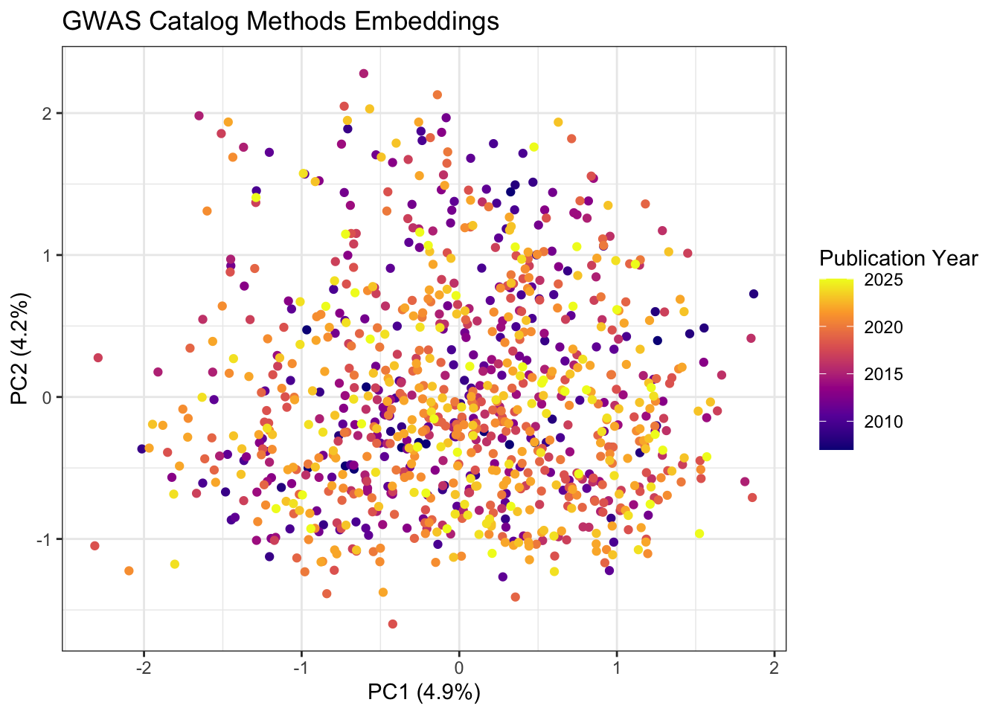
methods_pca_plot_table |>
ggplot(aes(x = PC2,
y = PC3,
color = YEAR)) +
geom_point() +
scale_color_viridis_c(
option = "plasma"
) +
labs(x = paste0("PC2 (", round(100 * methods_var_exp[2], digits = 1),
"%)"),
y = paste0("PC3 (",
round(100 * methods_var_exp[3], digits = 1),
"%)"),
colour = "Publication Year"
) +
labs(title = "GWAS Catalog Methods Embeddings") +
theme_bw()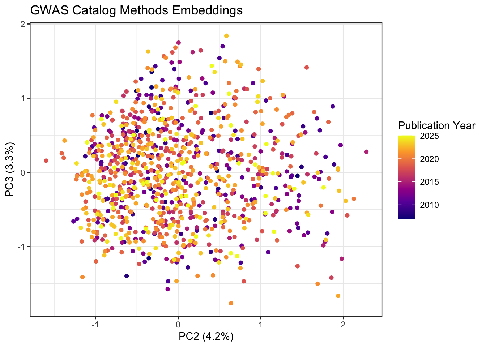
Distribution of GWAS Catalog Text Results Embeddings
results_pca_plot_table <-
results_pca_table |>
mutate(PUBMED_ID = as.integer(PUBMED_ID)) |>
inner_join(gwas_study_info |>
select(PUBMED_ID,
YEAR),
by = "PUBMED_ID")|>
mutate(YEAR = as.numeric(YEAR)) |>
distinct()
cor(as.numeric(results_pca_plot_table$YEAR),
results_pca_plot_table$PC1,
method = "spearman")[1] 0.3072896cor(as.numeric(results_pca_plot_table$YEAR),
results_pca_plot_table$PC2,
method = "spearman")[1] 0.02404619results_pca_plot_table |>
ggplot(aes(
x = PC1,
y = PC2,
color = YEAR)) +
geom_point() +
scale_color_viridis_c(
option = "plasma"
) +
labs(x = paste0("PC1 (", round(100 * results_var_exp[1], digits = 1),
"%)"),
y = paste0("PC2 (",
round(100 * results_var_exp[2], digits = 1),
"%)"),
colour = "Publication Year"
) +
labs(title = "GWAS Catalog Results Embeddings") +
theme_bw()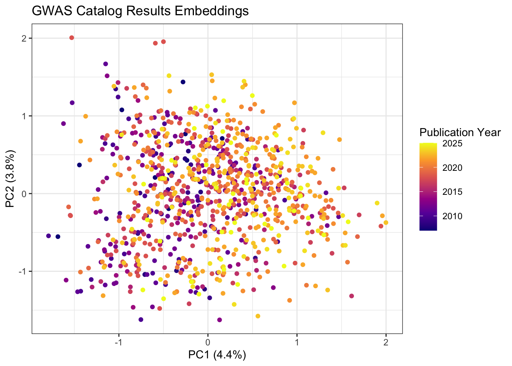
Condition/s studied
Need to first choose how to group conditions to ensure we have enough papers in each category for sampling. And, that where possible, papers fall into studying one condition category, rather than multiple.
# group conditions into broader categories to ensure we have enough papers in each category for sampling
gwas_study_info <-
gwas_study_info |>
mutate(cause_group = case_when(
grepl("cancer", cause, ignore.case = T) ~ "Cancer",
grepl("diabetes|chronic kidney disease", cause, ignore.case = T) ~ "Diabetes/CKD",
grepl("chronic obstructive pulmonary disease", cause, ignore.case = T) ~ "COPD",
grepl("heart|stroke|hemorrhage", cause, ignore.case = T) ~ "Cardiovascular/Cerebrovascular",
grepl("cirrhosis", cause, ignore.case = T) ~ "Liver Cirrhosis",
TRUE ~ cause
))
library(ComplexHeatmap)Loading required package: grid========================================
ComplexHeatmap version 2.18.0
Bioconductor page: http://bioconductor.org/packages/ComplexHeatmap/
Github page: https://github.com/jokergoo/ComplexHeatmap
Documentation: http://jokergoo.github.io/ComplexHeatmap-reference
If you use it in published research, please cite either one:
- Gu, Z. Complex Heatmap Visualization. iMeta 2022.
- Gu, Z. Complex heatmaps reveal patterns and correlations in multidimensional
genomic data. Bioinformatics 2016.
The new InteractiveComplexHeatmap package can directly export static
complex heatmaps into an interactive Shiny app with zero effort. Have a try!
This message can be suppressed by:
suppressPackageStartupMessages(library(ComplexHeatmap))
========================================
Attaching package: 'ComplexHeatmap'The following object is masked from 'package:plotly':
add_heatmapgwas_cond_comb_mat = gwas_study_info |>
mutate(study = 1) |>
distinct(PUBMED_ID, study, cause_group) |>
tidyr::pivot_wider(names_from = cause_group,
values_from = study,
values_fill = 0)
gwas_cond_comb_mat <- make_comb_mat(gwas_cond_comb_mat)
# create an upset plot
UpSet(gwas_cond_comb_mat,
comb_order = order(comb_size(gwas_cond_comb_mat),
decreasing = TRUE)
)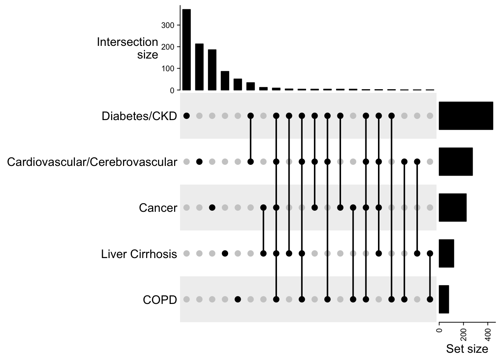
| Version | Author | Date |
|---|---|---|
| 13a47bf | IJbeasley | 2026-11-02 |
gwas_cond_comb_mat = gwas_study_info |>
mutate(study = 1) |>
distinct(PUBMED_ID, study, lancet_condition) |>
tidyr::pivot_wider(names_from = lancet_condition,
values_from = study,
values_fill = 0)
gwas_cond_comb_mat <- make_comb_mat(gwas_cond_comb_mat)
# create an upset plot
UpSet(gwas_cond_comb_mat,
comb_order = order(comb_size(gwas_cond_comb_mat),
decreasing = TRUE)
)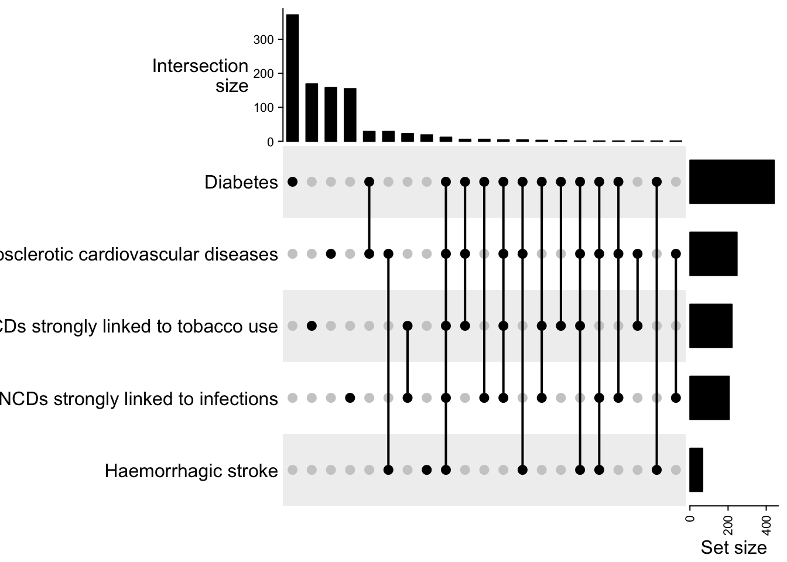
| Version | Author | Date |
|---|---|---|
| 13a47bf | IJbeasley | 2026-11-02 |
gwas_study_info <-
gwas_study_info |>
mutate(lancet_condition_group = ifelse(grepl("stroke|cardiovascular|haem", lancet_condition, ignore.case = T),
"Cardiovascular/Cerebrovascular",
lancet_condition))
gwas_cond_comb_mat = gwas_study_info |>
mutate(study = 1) |>
distinct(PUBMED_ID, study, lancet_condition_group) |>
tidyr::pivot_wider(names_from = lancet_condition_group,
values_from = study,
values_fill = 0)
gwas_cond_comb_mat <- make_comb_mat(gwas_cond_comb_mat)
# create an upset plot
UpSet(gwas_cond_comb_mat,
comb_order = order(comb_size(gwas_cond_comb_mat),
decreasing = TRUE)
)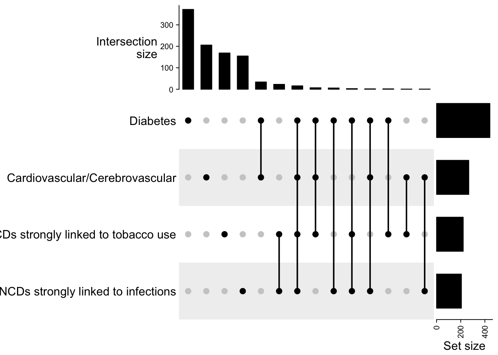
| Version | Author | Date |
|---|---|---|
| 13a47bf | IJbeasley | 2026-11-02 |
gwas_study_info_grouped <- gwas_study_info |>
group_by(PUBMED_ID) |>
summarise(
YEAR = paste(unique(YEAR), collapse = "|"),
cause_group = paste(sort(unique(cause_group)), collapse = " & "),
lancet_condition_group = paste(sort(unique(lancet_condition_group)), collapse = " & ")
) |>
mutate(lancet_condition_group = case_when(
str_detect(pattern = "&", lancet_condition_group) ~ "Multiple",
TRUE ~ lancet_condition_group
)) |>
mutate(cause_group = case_when(
str_detect(pattern = "&", cause_group) ~ "Multiple",
TRUE ~ cause_group
))
gwas_study_info_grouped |>
group_by(lancet_condition_group) |>
summarise(n = n()) |>
arrange(desc(n))# A tibble: 5 × 2
lancet_condition_group n
<chr> <int>
1 Diabetes 372
2 Cardiovascular/Cerebrovascular 206
3 NCDs strongly linked to tobacco use 169
4 NCDs strongly linked to infections 155
5 Multiple 95gwas_study_info_grouped |>
filter(lancet_condition_group == "Multiple") |>
group_by(cause_group) |>
summarise(n = n()) |>
arrange(desc(n))# A tibble: 2 × 2
cause_group n
<chr> <int>
1 Multiple 76
2 Cancer 19# most papers study one lancet_condition Distribution of GWAS Catalog Text Abstract Embeddings
PC’s 2 & 3 clearly separate / cluster GWAS Catalog abstract embeddings by Lancet Condition Category.
abstracts_pca_plot_table <-
abstracts_pca_table |>
inner_join(gwas_study_info_grouped |>
select(PUBMED_ID,
lancet_condition_group,
cause_group),
by = "PUBMED_ID") |>
distinct()
abstracts_pca_plot_table |>
ggplot(aes(
x = PC1,
y = PC2,
color = lancet_condition_group,
cause_group = cause_group)) +
geom_point(size = 0.8) +
scale_color_brewer(palette = "Dark2") +
labs(x = paste0("PC1 (", round(100 * abstracts_var_exp[1], digits = 1),
"%)"),
y = paste0("PC2 (",
round(100 * abstracts_var_exp[2], digits = 1),
"%)"),
colour = "Lancet Condition Category"
) +
theme_bw()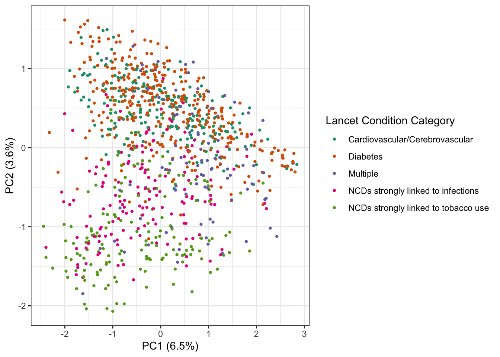
abstracts_pca_plot_table |>
ggplot(aes(
x = PC2,
y = PC3,
color = lancet_condition_group,
cause_group = cause_group,
pmid = PUBMED_ID,
)) +
geom_point(size = 0.8) +
scale_color_brewer(palette = "Set2") +
labs(x = paste0("PC2 (", round(100 * abstracts_var_exp[2], digits = 1),
"%)"),
y = paste0("PC3 (",
round(100 * abstracts_var_exp[3], digits = 1),
"%)"),
colour = "Lancet Condition Category"
) +
theme_bw()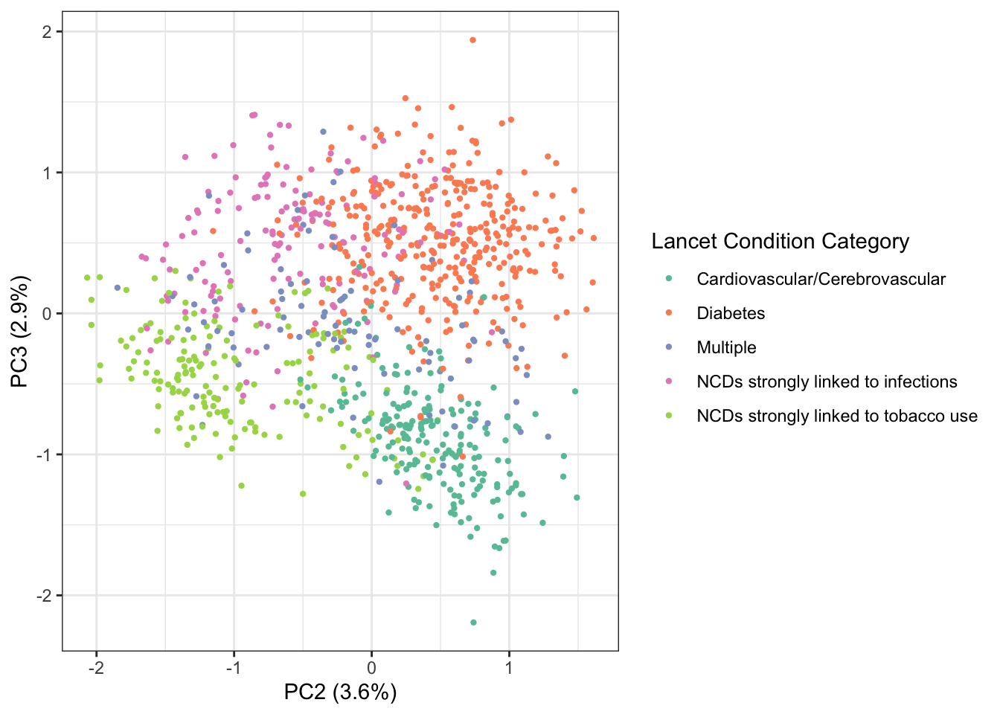
abstracts_pca_plot_table |>
mutate(multiple = ifelse(lancet_condition_group == "Multiple",
"Multiple",
"Single Category")) |>
ggplot(aes(x = PC2,
y = PC3,
color = lancet_condition_group,
cause_group = cause_group)) +
geom_point() +
scale_color_brewer(palette = "Set2") +
labs(x = paste0("PC2 (", round(100 * abstracts_var_exp[2], digits = 1),
"%)"),
y = paste0("PC3 (",
round(100 * abstracts_var_exp[3], digits = 1),
"%)"),
colour = "Lancet Condition Category"
) +
facet_wrap(~multiple) +
theme_bw()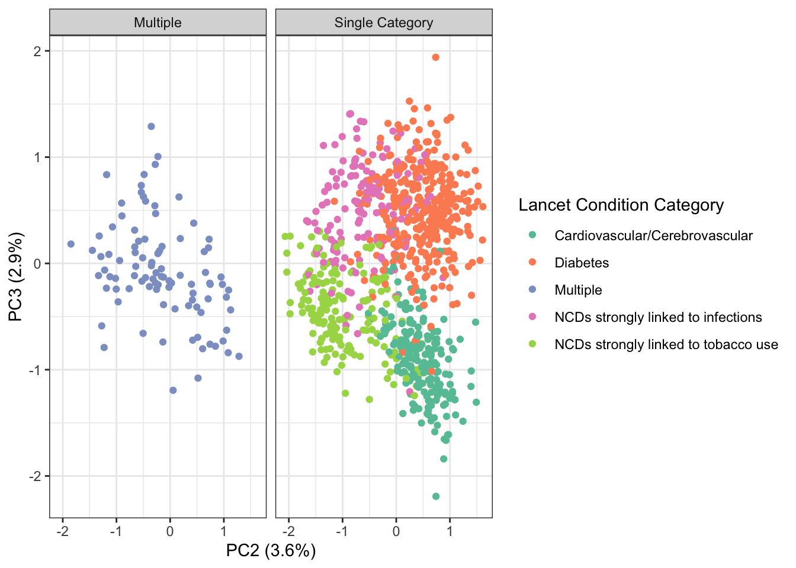
This analysis suggests YEAR and lancet_condition are important axes of variation in text, and therefore important axes to sample across to create a representative training sample.
Distribution of GWAS Catalog Methods Text Embeddings
methods_pca_plot_table <-
methods_pca_table |>
left_join(gwas_study_info_grouped |>
select(PUBMED_ID,
lancet_condition_group),
by = "PUBMED_ID") |>
distinct()
methods_pca_plot_table |>
ggplot(aes(
x = PC1,
y = PC2,
color = lancet_condition_group)) +
geom_point(size = 0.8) +
scale_color_brewer(palette = "Dark2") +
labs(x = paste0("PC1 (", round(100 * methods_var_exp[1], digits = 1),
"%)"),
y = paste0("PC2 (",
round(100 * methods_var_exp[2], digits = 1),
"%)"),
colour = "Lancet Condition Category"
) +
theme_bw()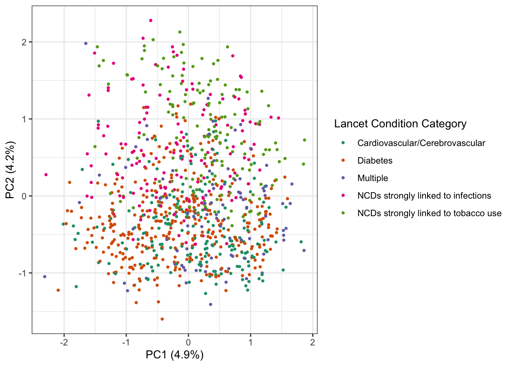
methods_pca_plot_table |>
ggplot(aes(
x = PC2,
y = PC3,
color = lancet_condition_group)) +
geom_point(size = 0.8) +
scale_color_brewer(palette = "Set2") +
labs(x = paste0("PC2 (", round(100 * methods_var_exp[2], digits = 1),
"%)"),
y = paste0("PC3 (",
round(100 * methods_var_exp[3], digits = 1),
"%)"),
colour = "Lancet Condition Category"
) +
theme_bw()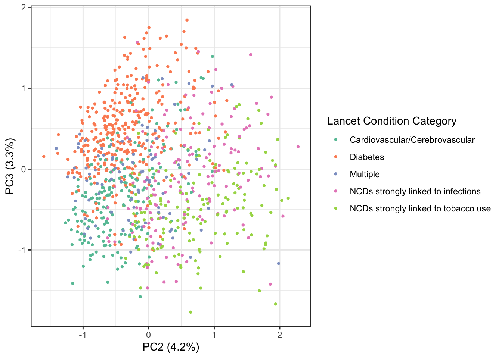
Distribution of GWAS Catalog Results Text Embeddings
results_pca_plot_table <-
results_pca_table |>
left_join(gwas_study_info_grouped |>
select(PUBMED_ID,
lancet_condition_group),
by = "PUBMED_ID") |>
distinct()
results_pca_plot_table |>
ggplot(aes(
x = PC1,
y = PC2,
color = lancet_condition_group)) +
geom_point(size = 0.8) +
scale_color_brewer(palette = "Dark2") +
labs(x = paste0("PC1 (", round(100 * results_var_exp[1], digits = 1),
"%)"),
y = paste0("PC2 (",
round(100 * results_var_exp[2], digits = 1),
"%)"),
colour = "Lancet Condition Category"
) +
theme_bw()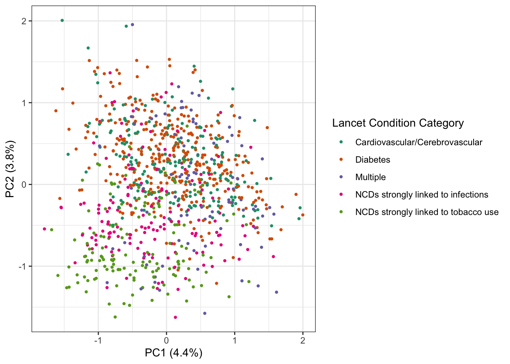
results_pca_plot_table |>
ggplot(aes(
x = PC2,
y = PC3,
color = lancet_condition_group)) +
geom_point(size = 0.8) +
scale_color_brewer(palette = "Set2") +
labs(x = paste0("PC2 (", round(100 * results_var_exp[2], digits = 1),
"%)"),
y = paste0("PC3 (",
round(100 * results_var_exp[3], digits = 1),
"%)"),
colour = "Lancet Condition Category"
) +
theme_bw()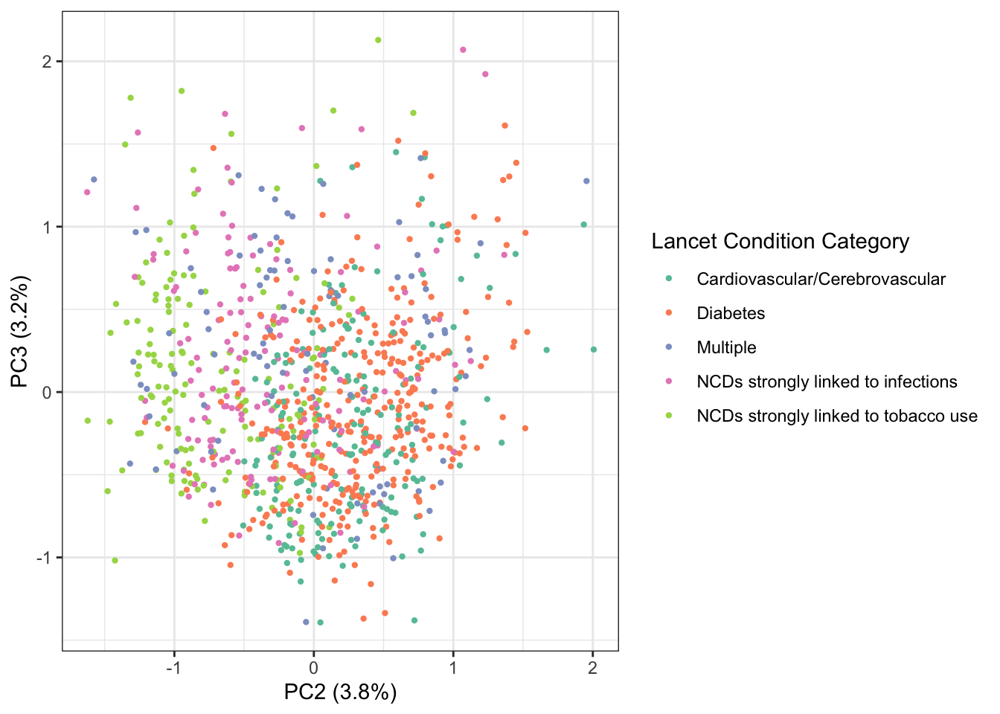
Journal
journal_names <- data.table::fread(here::here("data/gwas_catalog/gwas-catalog-v1.0.3.1-studies-r2026-09-13.tsv"),
quote = "",
select = c("PUBMED ID", "JOURNAL"))
journal_names = journal_names |>
dplyr::rename_with(~ gsub(" ", "_", .x)) |>
distinct()
journal_names <-
journal_names |>
filter(PUBMED_ID %in% unique(gwas_study_info$PUBMED_ID))
journal_names |>
group_by(JOURNAL) |>
summarise(n = n()) |>
arrange(desc(n)) |>
head()# A tibble: 6 × 2
JOURNAL n
<chr> <int>
1 Nat Genet 107
2 Nat Commun 41
3 Sci Rep 35
4 PLoS One 34
5 PLoS Genet 32
6 Diabetes 31journal_names <-
inner_join(
gwas_study_info_grouped,
journal_names,
by = "PUBMED_ID")
journal_names <-
journal_names |>
mutate(journal_group =
case_when(
grepl("Nephrol|Endocrinol|Diabet|Kidney", JOURNAL, ignore.case = T) ~ "Diabetes/Nephrology",
grepl("Cancer|Onco|Carcino", JOURNAL, ignore.case = T) ~ "Cancer",
grepl("Respir|Pulmon|Lung|Chron Obstruct|COPD|Thorax|Thorac", JOURNAL, ignore.case = T) ~ "Respiratory",
grepl("Cardio|Heart|Stroke|Circ|Hypertens|Atherosc|Vasc|Arterio", JOURNAL, ignore.case = T) ~ "Cardiovascular",
grepl("Hepatol|Liver|Gastro|Gastroenterol|Gastrointest|Gut|JHEP", JOURNAL, ignore.case = T) ~ "Gastrointestinal",
grepl("Genetics|Genom|Genome", JOURNAL, ignore.case = T) ~ "Genetics/Genomics",
JOURNAL %in% c("PLoS Genet",
"J Hum Genet", "Nat Genet", "Hum Mol Genet", "Am J Hum Genet",
"Front Genet", "HGG Adv", "Balkan J Med Genet", "Ann Hum Genet",
"Clin Genet", "Nucleic Acids Res", "J Genet",
"Eur J Hum Genet", "Genet Med", "J Med Genet",
"J Gene Med", "Gene",
"BMC Genet", "BMC Med Genet", "Genes (Basel)", "Genet Epidemiol",
"Hum Genet") ~ "Genetics/Genomics",
JOURNAL %in% c("Nat Commun",
"Nature",
"Elife",
"Sci Rep",
"Commun Biol",
"Lancet",
"Science",
"N Engl J Med",
"PloS One",
"PLoS One",
"Nat Med",
"JAMA",
"JAMA Netw Open",
"Nat Commun Biol") ~ "General Science/Medicine",
TRUE ~ "Other")
)
# journal_names <-
# journal_names |>
# mutate(publisher_group =
# case_when(
# grepl("Nature|Nat", JOURNAL, ignore.case = T) ~ "Nature",
# grepl("Science|Sci", JOURNAL, ignore.case = T) ~ "Science",
# grepl("Lancet", JOURNAL, ignore.case = T) ~ "Lancet",
# grepl("JAMA", JOURNAL, ignore.case = T) ~ "JAMA",
# grepl("Front", JOURNAL, ignore.case = T) ~ "Frontiers",
# grepl("PLoS|PLOS", JOURNAL, ignore.case = T) ~ "PLOS",
# grepl("BMC", JOURNAL, ignore.case = T) ~ "BMC",
# TRUE ~ "Other")
# )# Get journal metadata from OpenAlex (ISSN, publisher, etc.) for all journals in the GWAS Catalog
source(here::here("code/journal_meta/get_openalex_journal_info.R"))
Attaching package: 'httr'The following object is masked from 'package:plotly':
config
Attaching package: 'purrr'The following object is masked from 'package:jsonlite':
flatten# all 295 of your journals, cached to output/journal_meta/openalex_journals.csv
journal_meta <- get_journals_info(unique(journal_names$JOURNAL))0 journals to fetch (293 cached)journal_names <-
left_join(journal_names,
journal_meta |> rename(JOURNAL = journal),
by = "JOURNAL")
journal_names <-
journal_names |>
mutate(publisher = case_when(
publisher == "" & JOURNAL == "BMC Genet" ~ "BioMed Central",
publisher == "" & JOURNAL == "World J Diabetes" ~ "Baishideng Publishing Group Inc",
publisher == "" & JOURNAL == "AMIA Annu Symp Proc" ~ "American Medical Informatics Association",
publisher == "" & JOURNAL == "Korean Circ J" ~ "Korean Society of Cardiology",
publisher == "" & JOURNAL == "Kidney Int Suppl" ~ "Blackwell Publishing",
TRUE ~ publisher
))
journal_names <-
journal_names |>
mutate(publisher_group = case_when(
grepl("Springer", publisher) ~ "Springer Nature",
grepl("Nature Portfolio", publisher) ~ "Springer Nature",
publisher == "University of Oxford" & JOURNAL == "Gigascience" ~ "Oxford University Press",
# grepl("Society|Association|Korea", publisher) ~ "Society Pulisher",
TRUE ~ publisher
)) |>
mutate(publisher_group = forcats::fct_lump_min(publisher_group,
min = 10,
other_level = "Other"))
# country code
journal_names <-
journal_names |>
mutate(country_code = case_when(
country_code == "" & publisher == "BioMed Central" ~ "GB",
country_code == "" & publisher == "American Medical Informatics Association" ~ "US",
country_code == "" & publisher == "American Society of Nephrology" ~ "US",
country_code == "" & JOURNAL == "Kidney Int Suppl" ~ "US",
country_code == "" & JOURNAL == "Eur Respir J" ~ "GB",
country_code == "" & JOURNAL == "AMIA Annu Symp Proc" ~ "US",
TRUE ~ country_code
))
journal_names <-
journal_names |>
mutate(country_code_group = case_when(
country_code %in% c("US", "CA") ~ "North America",
country_code %in% c("AU", "NZ", "GB") ~ "GB/Aus/NZ",
country_code %in% c("PL", "BG", "GR", "IT", "DK") ~ "Other Europe",
TRUE ~ country_code
)) |>
mutate(publisher_group = forcats::fct_lump_min(publisher_group,
min = 5,
other_level = "Other"))Distribution of GWAS Catalog Text Abstract Embeddings by Journal
abstracts_pca_plot_table <-
abstracts_pca_table |>
inner_join(
journal_names,
by = "PUBMED_ID") |>
distinct()By h index:
cor(as.numeric(abstracts_pca_plot_table$PC1),
as.numeric(abstracts_pca_plot_table$h_index),
method = "spearman")[1] 0.2125356cor(as.numeric(abstracts_pca_plot_table$PC2),
as.numeric(abstracts_pca_plot_table$h_index),
method = "spearman")[1] -0.09372661cor(as.numeric(abstracts_pca_plot_table$PC3),
as.numeric(abstracts_pca_plot_table$h_index),
method = "spearman")[1] -0.03349337abstracts_pca_plot_table |>
ggplot(aes(
x = PC1,
y = PC2,
color = h_index,
journal = JOURNAL)) +
geom_point(size = 0.8) +
scale_color_viridis_c(
option = "plasma"
) +
labs(x = paste0("PC1 (", round(100 * abstracts_var_exp[1], digits = 1),
"%)"),
y = paste0("PC2 (",
round(100 * abstracts_var_exp[2], digits = 1),
"%)"),
colour = "Journal h-index"
) +
theme_bw()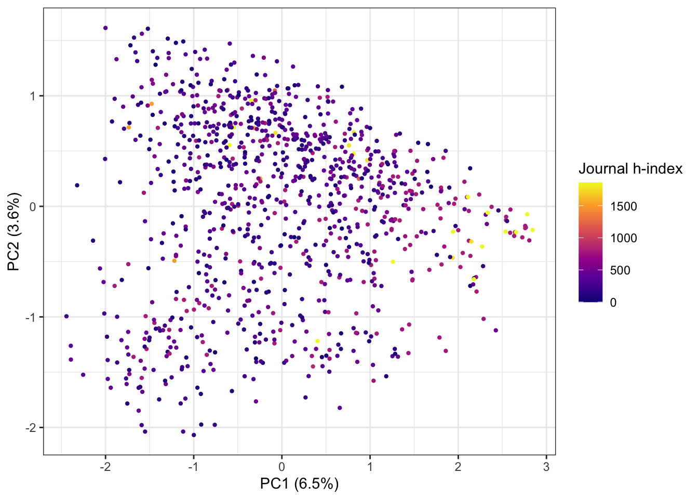
abstracts_pca_plot_table |>
ggplot(aes(
x = PC2,
y = PC3,
color = h_index,
journal = JOURNAL)) +
geom_point(size = 0.8) +
scale_color_viridis_c(
option = "plasma"
) +
labs(x = paste0("PC2 (", round(100 * abstracts_var_exp[2], digits = 1),
"%)"),
y = paste0("PC3 (",
round(100 * abstracts_var_exp[3], digits = 1),
"%)"),
colour = "Journal h-index"
) +
theme_bw()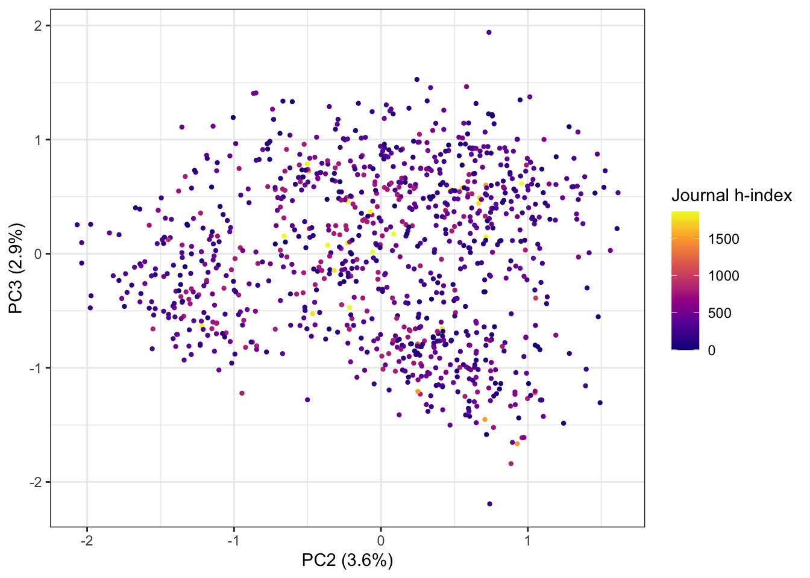
APC Cost
cor(as.numeric(abstracts_pca_plot_table$PC1),
as.numeric(abstracts_pca_plot_table$apc_usd),
method = "spearman",
"complete.obs")[1] 0.3543417cor(as.numeric(abstracts_pca_plot_table$PC2),
as.numeric(abstracts_pca_plot_table$apc_usd),
method = "spearman",
"complete.obs")[1] -0.2182415cor(as.numeric(abstracts_pca_plot_table$PC3),
as.numeric(abstracts_pca_plot_table$apc_usd),
method = "spearman",
"complete.obs")[1] -0.1176397abstracts_pca_plot_table |>
ggplot(aes(
x = PC1,
y = PC2,
color = apc_usd,
journal = JOURNAL)) +
geom_point(size = 0.8) +
scale_color_viridis_c(
option = "viridis"
) +
labs(x = paste0("PC1 (", round(100 * abstracts_var_exp[1], digits = 1),
"%)"),
y = paste0("PC2 (",
round(100 * abstracts_var_exp[2], digits = 1),
"%)"),
colour = "Journal APC Cost (USD)"
) +
theme_bw()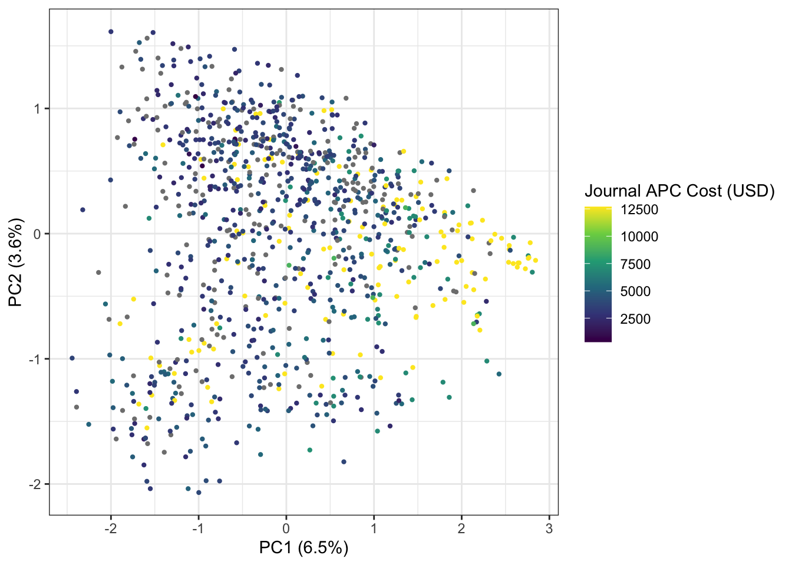
abstracts_pca_plot_table |>
ggplot(aes(
x = PC2,
y = PC3,
color = apc_usd,
journal = JOURNAL)) +
geom_point(size = 0.8) +
scale_color_viridis_c(
option = "viridis"
) +
labs(x = paste0("PC2 (", round(100 * abstracts_var_exp[2], digits = 1),
"%)"),
y = paste0("PC3 (",
round(100 * abstracts_var_exp[3], digits = 1),
"%)"),
colour = "Journal APC Cost (USD)"
) +
theme_bw()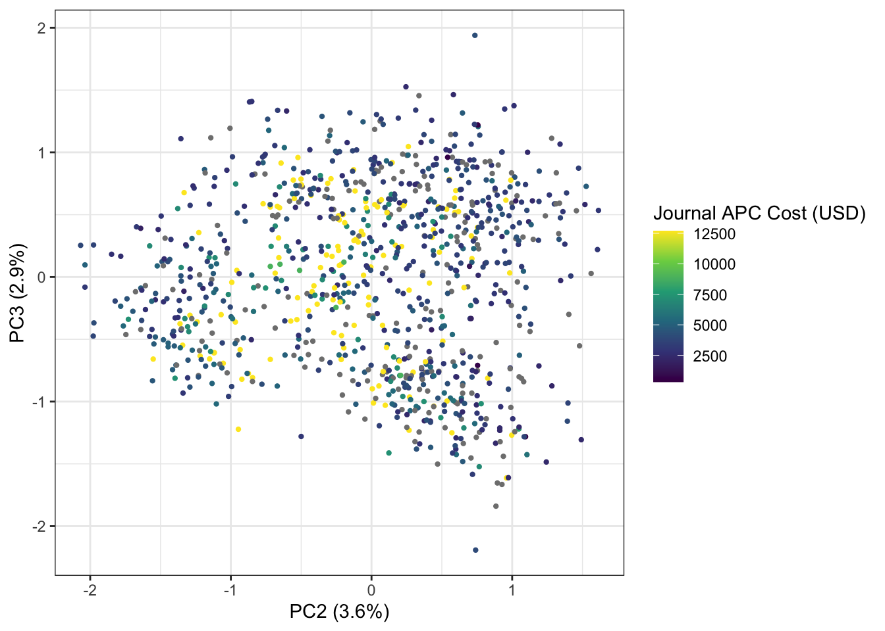
Two year citedness
cor(as.numeric(abstracts_pca_plot_table$PC1),
as.numeric(abstracts_pca_plot_table$two_yr_citedness),
method = "spearman")[1] 0.3454918cor(as.numeric(abstracts_pca_plot_table$PC2),
as.numeric(abstracts_pca_plot_table$two_yr_citedness),
method = "spearman")[1] -0.1988125cor(as.numeric(abstracts_pca_plot_table$PC3),
as.numeric(abstracts_pca_plot_table$two_yr_citedness),
method = "spearman")[1] 0.03091516abstracts_pca_plot_table |>
mutate(two_yr_citedness = log10(as.numeric(two_yr_citedness + 1))) |>
ggplot(aes(
x = PC1,
y = PC2,
color = two_yr_citedness,
journal = JOURNAL)) +
geom_point(size = 0.8) +
scale_color_viridis_c(
option = "plasma"
) +
labs(x = paste0("PC1 (", round(100 * abstracts_var_exp[1], digits = 1),
"%)"),
y = paste0("PC2 (",
round(100 * abstracts_var_exp[2], digits = 1),
"%)"),
colour = "log10(Journal Two-Year Citedness+1)"
) +
theme_bw()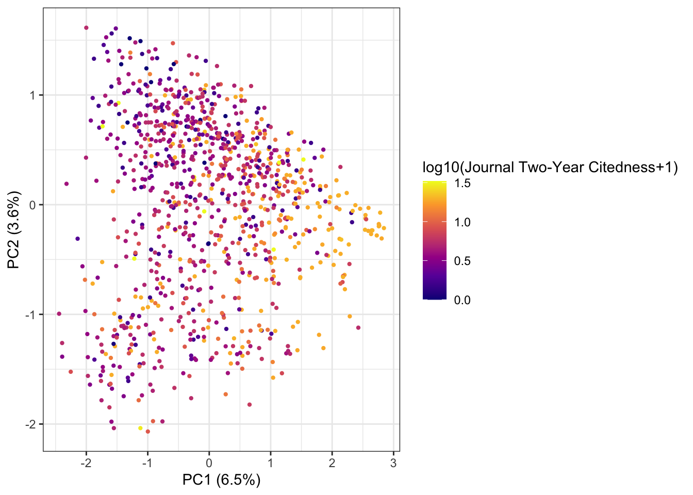
abstracts_pca_plot_table |>
mutate(two_yr_citedness = log10(as.numeric(two_yr_citedness + 1))) |>
ggplot(aes(
x = PC2,
y = PC3,
color = two_yr_citedness,
journal = JOURNAL)) +
geom_point(size = 0.8) +
scale_color_viridis_c(
option = "plasma"
) +
labs(x = paste0("PC2 (", round(100 * abstracts_var_exp[2], digits = 1),
"%)"),
y = paste0("PC3 (",
round(100 * abstracts_var_exp[3], digits = 1),
"%)"),
colour = "log10(Journal Two-Year Citedness+1)"
) +
theme_bw()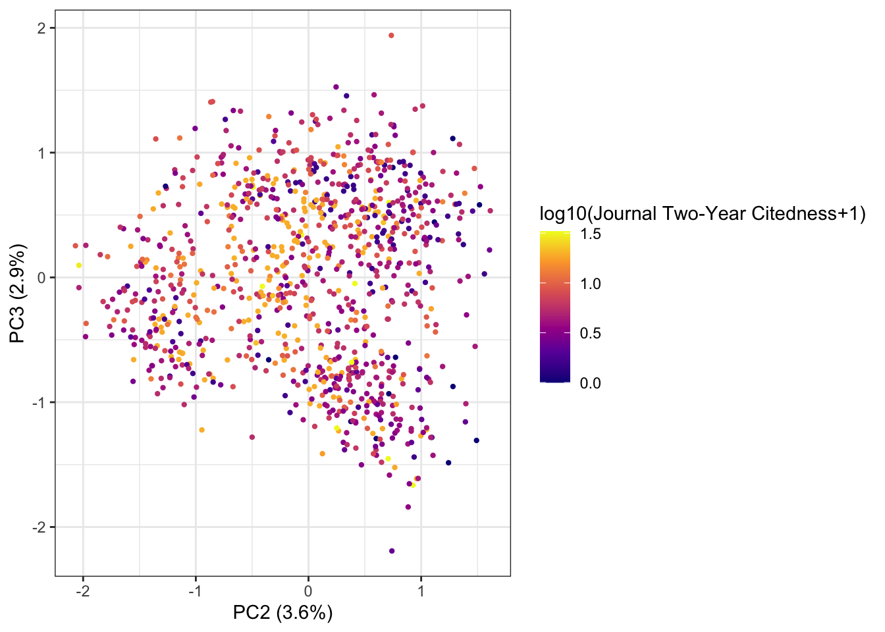
Publisher group
abstracts_pca_plot_table |>
ggplot(aes(
x = PC1,
y = PC2,
journal = JOURNAL,
color = publisher_group)) +
geom_point(size = 0.8) +
scale_color_brewer(palette = "Paired") +
labs(x = paste0("PC1 (", round(100 * abstracts_var_exp[1], digits = 1),
"%)"),
y = paste0("PC2 (",
round(100 * abstracts_var_exp[2], digits = 1),
"%)"),
colour = "Publisher"
) +
theme_bw()Warning in RColorBrewer::brewer.pal(n, pal): n too large, allowed maximum for palette Paired is 12
Returning the palette you asked for with that many colorsWarning: Removed 462 rows containing missing values or values outside the scale range
(`geom_point()`).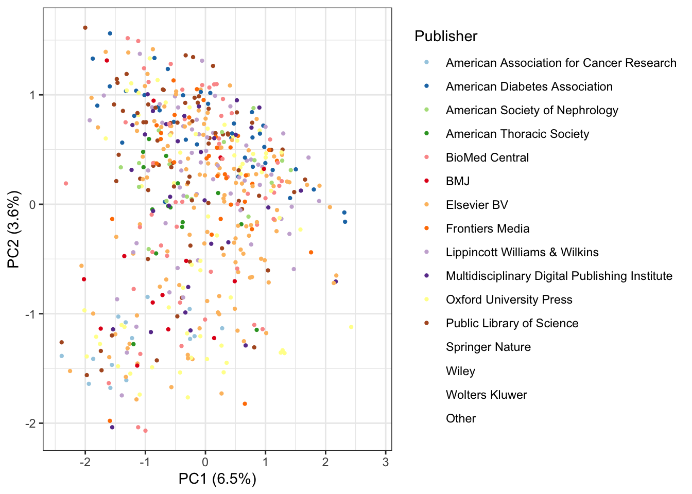
abstracts_pca_plot_table |>
ggplot(aes(
x = PC2,
y = PC3,
color = publisher_group)) +
geom_point(size = 0.8) +
scale_color_brewer(palette = "Set3") +
labs(x = paste0("PC2 (", round(100 * abstracts_var_exp[2], digits = 1),
"%)"),
y = paste0("PC3 (",
round(100 * abstracts_var_exp[3], digits = 1),
"%)"),
colour = "Publisher"
) +
theme_bw()Warning in RColorBrewer::brewer.pal(n, pal): n too large, allowed maximum for palette Set3 is 12
Returning the palette you asked for with that many colors
Warning in RColorBrewer::brewer.pal(n, pal): Removed 462 rows containing missing values or values outside the scale range
(`geom_point()`).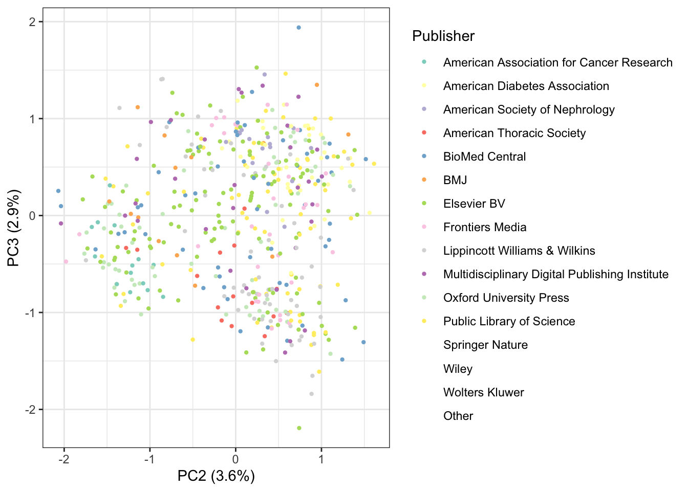
Open Access
abstracts_pca_plot_table |>
ggplot(aes(
x = PC1,
y = PC2,
color = is_oa)) +
geom_point(size = 0.8) +
scale_color_brewer(palette = "Dark2") +
labs(x = paste0("PC1 (", round(100 * abstracts_var_exp[1], digits = 1),
"%)"),
y = paste0("PC2 (",
round(100 * abstracts_var_exp[2], digits = 1),
"%)"),
colour = "Is OA?"
) +
theme_bw()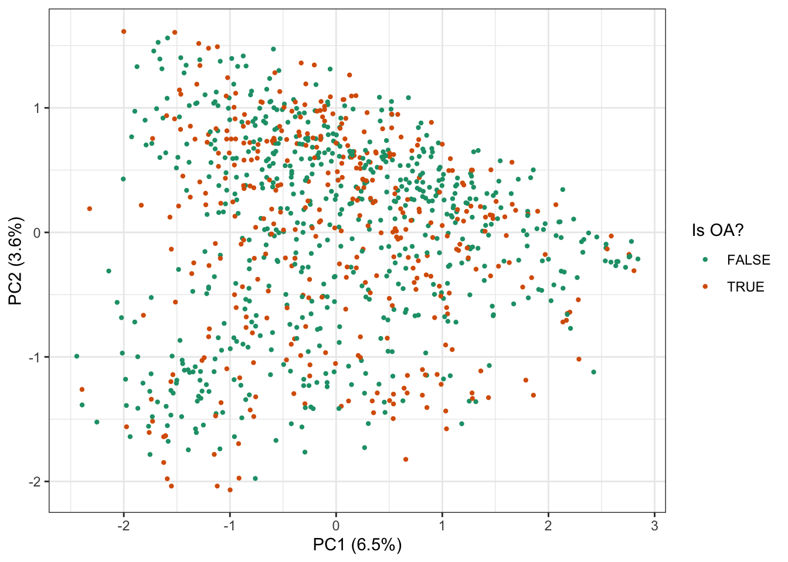
abstracts_pca_plot_table |>
ggplot(aes(
x = PC2,
y = PC3,
color = is_oa)) +
geom_point(size = 0.8) +
scale_color_brewer(palette = "Dark2") +
labs(x = paste0("PC2 (", round(100 * abstracts_var_exp[2], digits = 1),
"%)"),
y = paste0("PC3 (",
round(100 * abstracts_var_exp[3], digits = 1),
"%)"),
colour = "Is OA?"
) +
theme_bw()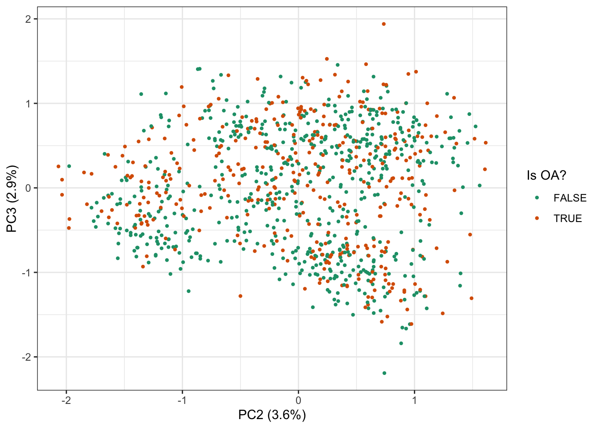
Journal group (lumping journals with <20 papers into “Other”)
abstracts_pca_plot_table |>
ggplot(aes(
x = PC1,
y = PC2,
color = journal_group)) +
geom_point(size = 0.8) +
#scale_color_brewer(palette = "Dark2") +
labs(x = paste0("PC1 (", round(100 * abstracts_var_exp[1], digits = 1),
"%)"),
y = paste0("PC2 (",
round(100 * abstracts_var_exp[2], digits = 1),
"%)"),
colour = "Journal"
) +
theme_bw()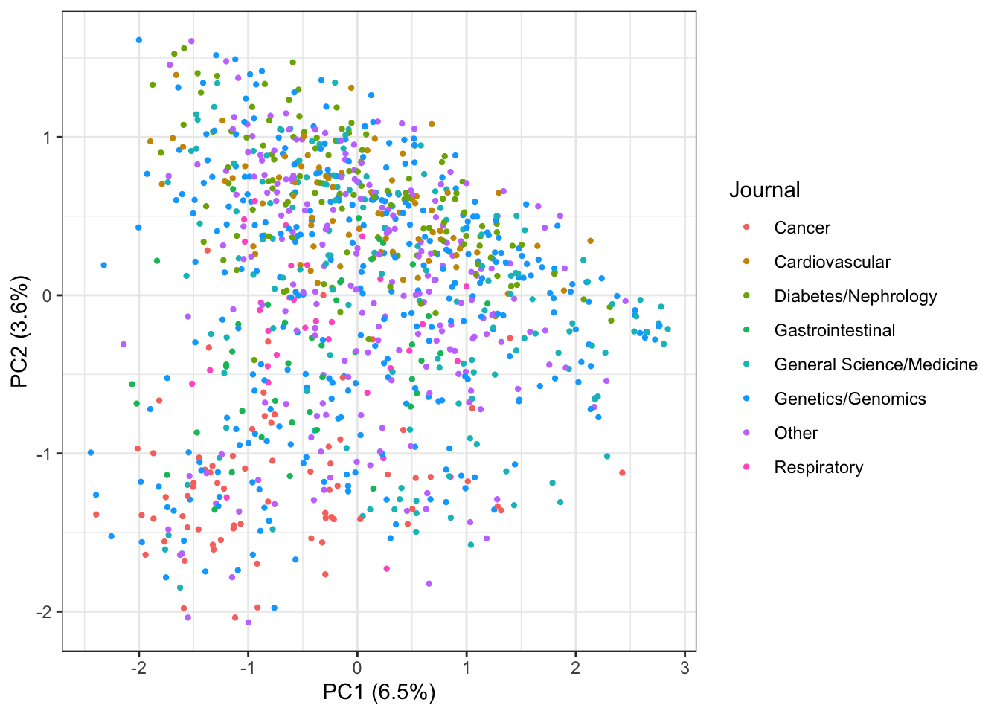
abstracts_pca_plot_table |>
ggplot(aes(
x = PC2,
y = PC3,
JOURNAL = JOURNAL,
color = journal_group)) +
geom_point(size = 0.8) +
labs(x = paste0("PC2 (", round(100 * abstracts_var_exp[2], digits = 1),
"%)"),
y = paste0("PC3 (",
round(100 * abstracts_var_exp[3], digits = 1),
"%)"),
colour = "Journal"
) +
theme_bw()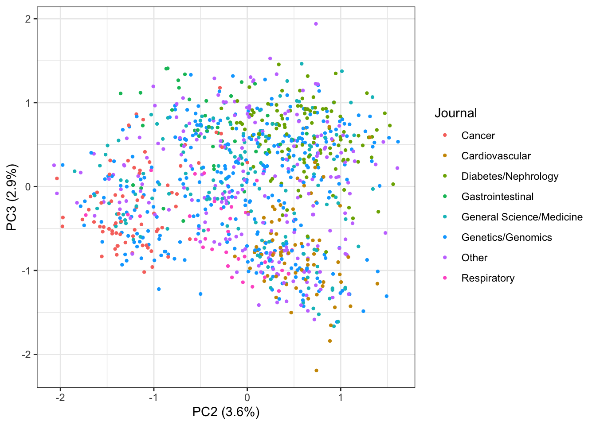
Distribution of GWAS Catalog Text Methods Embeddings by Journal
By h index:
methods_pca_plot_table <-
methods_pca_table |>
inner_join(
journal_names,
by = "PUBMED_ID") |>
distinct()
cor(as.numeric(methods_pca_plot_table$PC1),
as.numeric(methods_pca_plot_table$h_index),
method = "spearman")[1] 0.1325745cor(as.numeric(methods_pca_plot_table$PC2),
as.numeric(methods_pca_plot_table$h_index),
method = "spearman")[1] -0.0402059cor(as.numeric(methods_pca_plot_table$PC3),
as.numeric(methods_pca_plot_table$h_index),
method = "spearman")[1] -0.06332438methods_pca_plot_table |>
ggplot(aes(
x = PC1,
y = PC2,
color = h_index,
journal = JOURNAL)) +
geom_point(size = 0.8) +
scale_color_viridis_c(
option = "plasma"
) +
labs(x = paste0("PC1 (", round(100 * methods_var_exp[1], digits = 1),
"%)"),
y = paste0("PC2 (",
round(100 * methods_var_exp[2], digits = 1),
"%)"),
colour = "Journal h-index"
) +
theme_bw()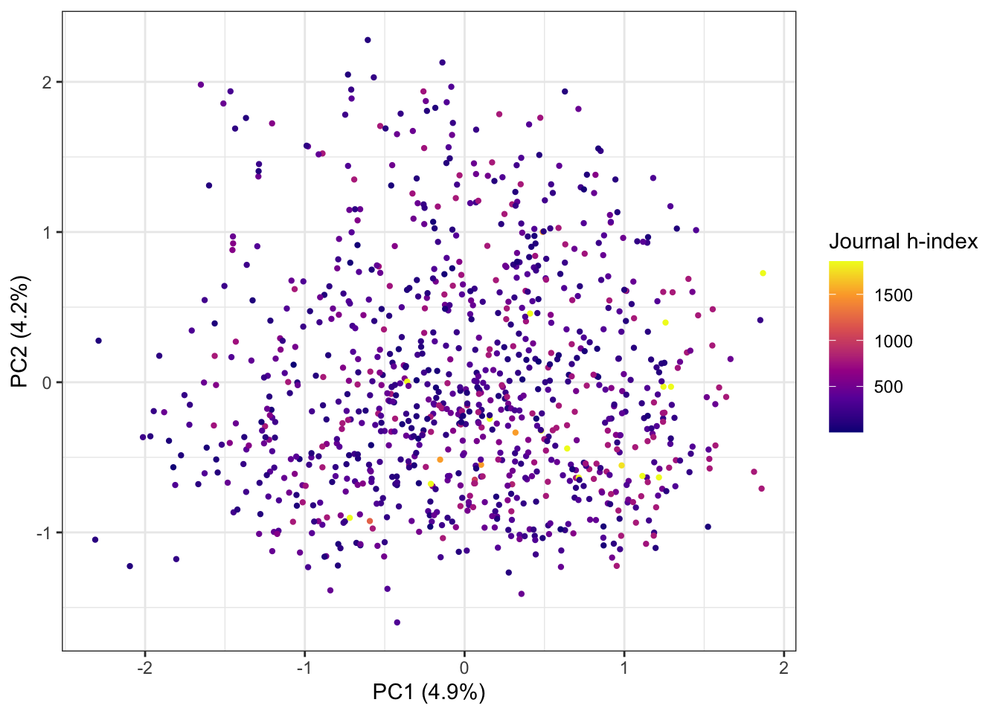
methods_pca_plot_table |>
ggplot(aes(
x = PC2,
y = PC3,
color = h_index,
journal = JOURNAL)) +
geom_point(size = 0.8) +
scale_color_viridis_c(
option = "plasma"
) +
labs(x = paste0("PC2 (", round(100 * methods_var_exp[2], digits = 1),
"%)"),
y = paste0("PC3 (",
round(100 * methods_var_exp[3], digits = 1),
"%)"),
colour = "Journal h-index"
) +
theme_bw()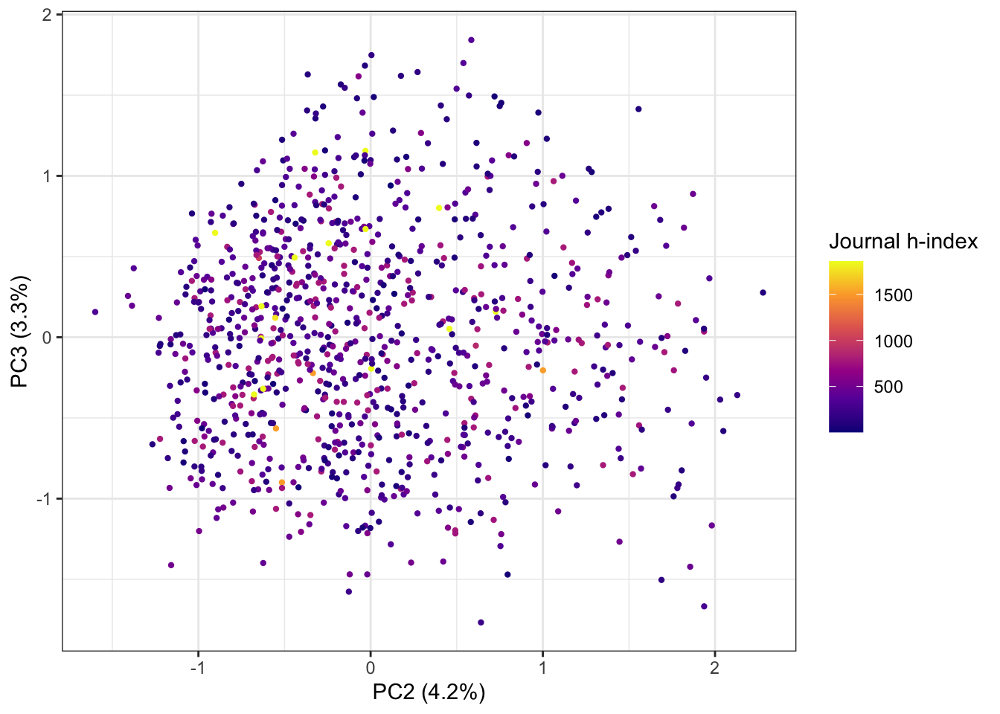
APC Cost
cor(as.numeric(methods_pca_plot_table$PC1),
as.numeric(methods_pca_plot_table$apc_usd),
method = "spearman",
"complete.obs")[1] 0.2550176cor(as.numeric(methods_pca_plot_table$PC2),
as.numeric(methods_pca_plot_table$apc_usd),
method = "spearman",
"complete.obs")[1] -0.01221117cor(as.numeric(methods_pca_plot_table$PC3),
as.numeric(methods_pca_plot_table$apc_usd),
method = "spearman",
"complete.obs")[1] -0.1514248methods_pca_plot_table |>
ggplot(aes(
x = PC1,
y = PC2,
color = apc_usd,
journal = JOURNAL)) +
geom_point(size = 0.8) +
scale_color_viridis_c(
option = "viridis"
) +
labs(x = paste0("PC1 (", round(100 * methods_var_exp[1], digits = 1),
"%)"),
y = paste0("PC2 (",
round(100 * methods_var_exp[2], digits = 1),
"%)"),
colour = "Journal APC Cost (USD)"
) +
theme_bw()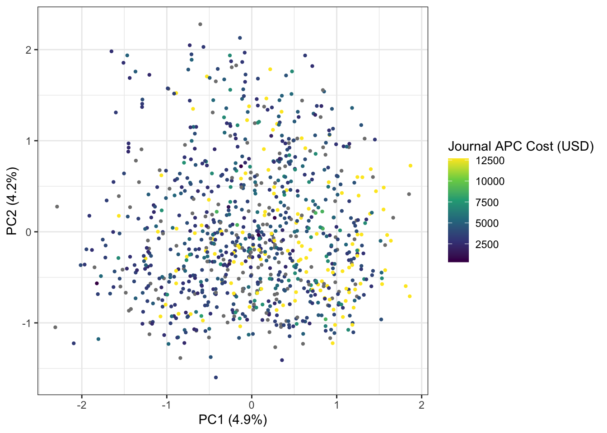
methods_pca_plot_table |>
ggplot(aes(
x = PC2,
y = PC3,
color = apc_usd,
journal = JOURNAL)) +
geom_point(size = 0.8) +
scale_color_viridis_c(
option = "viridis"
) +
labs(x = paste0("PC2 (", round(100 * methods_var_exp[2], digits = 1),
"%)"),
y = paste0("PC3 (",
round(100 * methods_var_exp[3], digits = 1),
"%)"),
colour = "Journal APC Cost (USD)"
) +
theme_bw()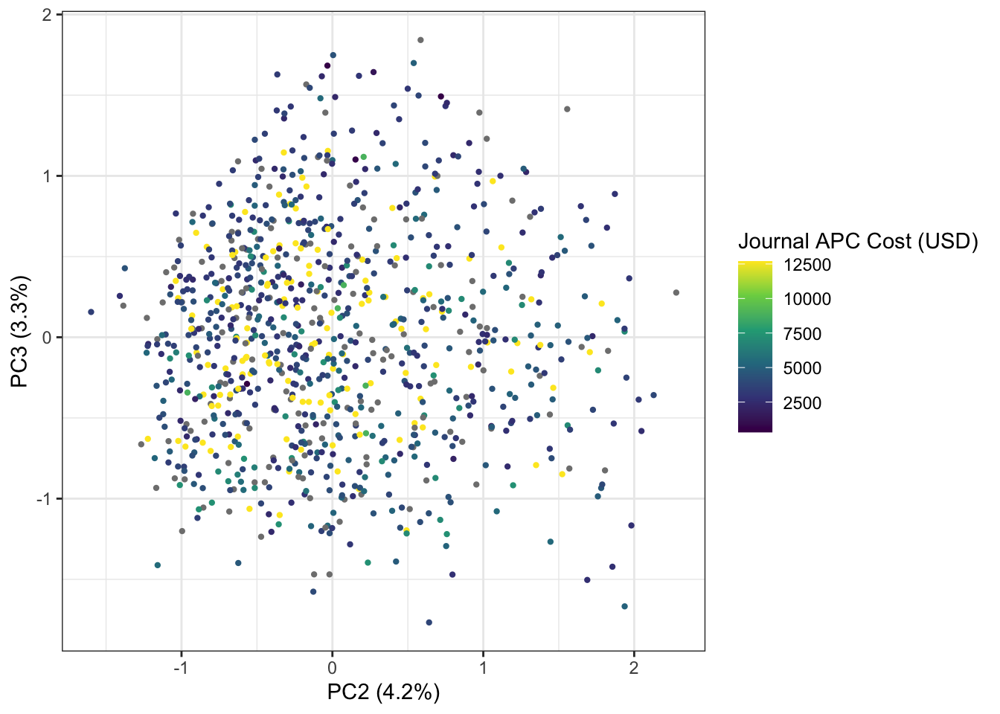
Two year citedness
cor(as.numeric(methods_pca_plot_table$PC1),
as.numeric(methods_pca_plot_table$two_yr_citedness),
method = "spearman")[1] 0.1669263cor(as.numeric(methods_pca_plot_table$PC2),
as.numeric(methods_pca_plot_table$two_yr_citedness),
method = "spearman")[1] -0.01730743cor(as.numeric(methods_pca_plot_table$PC3),
as.numeric(methods_pca_plot_table$two_yr_citedness),
method = "spearman")[1] -0.04915336methods_pca_plot_table |>
dplyr::mutate(two_yr_citedness = log10(as.numeric(two_yr_citedness + 1))) |>
ggplot(aes(
x = PC1,
y = PC2,
color = two_yr_citedness,
journal = JOURNAL)) +
geom_point(size = 0.8) +
scale_color_viridis_c(
option = "plasma"
) +
labs(x = paste0("PC1 (", round(100 * methods_var_exp[1], digits = 1),
"%)"),
y = paste0("PC2 (",
round(100 * methods_var_exp[2], digits = 1),
"%)"),
colour = "log10(Journal Two-Year Citedness+1)"
) +
theme_bw()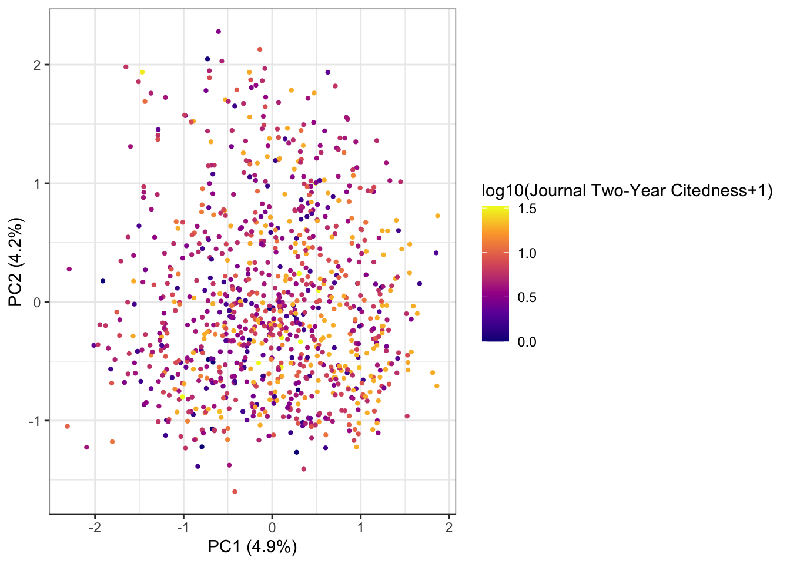
methods_pca_plot_table |>
mutate(two_yr_citedness = log10(as.numeric(two_yr_citedness + 1))) |>
ggplot(aes(
x = PC2,
y = PC3,
color = two_yr_citedness,
journal = JOURNAL)) +
geom_point(size = 0.8) +
scale_color_viridis_c(
option = "plasma"
) +
labs(x = paste0("PC2 (", round(100 * methods_var_exp[2], digits = 1),
"%)"),
y = paste0("PC3 (",
round(100 * methods_var_exp[3], digits = 1),
"%)"),
colour = "log10(Journal Two-Year Citedness+1)"
) +
theme_bw()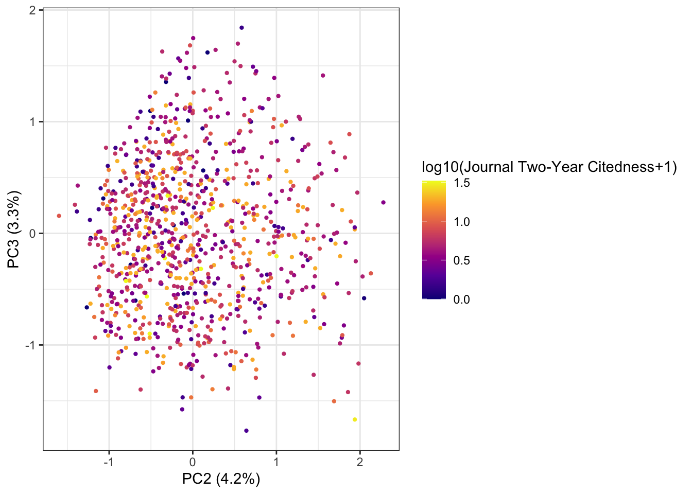
Quantifying what drives variation in the embeddings
The PCA plots above suggest year and condition are the main axes of variation. Here we put numbers on this, and check other factors that could matter for training-set selection: the ancestry of the study sample, the source of the full text, and whether the paper is a meta-analysis. In particular, we ask whether the year effect is still there once text source is accounted for (older papers are more likely to only be available as PDFs).
Two complementary approaches:
- Regression on the top 10 PCs. For each PC, the R² of each factor on its own (marginal), and the R² it adds on top of all the other factors (unique). Summed across PCs, weighted by variance explained.
- PERMANOVA (
vegan::adonis2) on the full embeddings (cosine distance), withby = "margin"giving each factor’s unique contribution.
Marginal R² much bigger than unique R² means a factor overlaps with others (e.g. year and text source).
Setting up covariates data.frame
paper_covariates <-
full_join(
journal_names |>
distinct(PUBMED_ID,
YEAR,
is_oa,
publisher,
publisher_group,
journal = JOURNAL,
journal_group,
h_index,
two_yr_citedness,
apc_usd),
gwas_study_info_grouped |>
distinct(PUBMED_ID,
lancet_condition_group,
cause_group),
by = "PUBMED_ID")
paper_covariates <- paper_covariates |>
mutate(is_oa = factor(is_oa, levels = c(FALSE, TRUE),
labels = c("Not OA", "OA")),
lancet_condition_group = factor(lancet_condition_group),
journal_group = factor(journal_group),
publisher = factor(publisher),
publisher_group = factor(publisher_group)
)Add ancestry information to covariates
# ---- Ancestry of the discovery (initial-stage) sample ----
gwas_ancest_info <- data.table::fread(
here::here("data/gwas_catalog/gwas-catalog-v1.0.3.1-ancestries-r2026-09-13.tsv"),
sep = "\t",
quote = "") |>
dplyr::rename_with(~ gsub(" ", "_", .x)) |>
mutate(YEAR = lubridate::year(lubridate::ymd(DATE))) |>
filter(YEAR < 2026)
gwas_ancest_info <- gwas_ancest_info |>
filter(PUBMED_ID %in% unique(paper_covariates$PUBMED_ID))
gwas_ancest_info <- gwas_ancest_info |>
filter(!is.na(NUMBER_OF_INDIVIDUALS))
gwas_ancest_info <-
gwas_ancest_info |>
filter(STAGE == "initial")
source(here::here("code/pop_desc_processing/plot_gwas_ancest_comp.R"))
grouped_ancest = vector()
broad_ancest_cat = unique(gwas_ancest_info$BROAD_ANCESTRAL_CATEGORY)
for(study_ancest in broad_ancest_cat){
grouped_ancest[study_ancest] = group_ancestry_fn(study_ancest)
}
grouped_ancest_map = data.frame(ancestry_group = grouped_ancest,
BROAD_ANCESTRAL_CATEGORY = broad_ancest_cat
)
paper_ancestry <-
left_join(
gwas_ancest_info,
grouped_ancest_map,
by = "BROAD_ANCESTRAL_CATEGORY")
paper_ancestry <-
paper_ancestry |>
distinct(PUBMED_ID,
STUDY_ACCESSION,
ancestry_group,
NUMBER_OF_INDIVIDUALS)
paper_ancestry <-
paper_ancestry |>
group_by(PUBMED_ID, STUDY_ACCESSION, ancestry_group) |>
summarise(NUMBER_OF_INDIVIDUALS = sum(NUMBER_OF_INDIVIDUALS), .groups = "drop")
paper_ancestry <-
paper_ancestry |>
group_by(PUBMED_ID, ancestry_group) |>
slice_max(NUMBER_OF_INDIVIDUALS, n = 1, with_ties = FALSE) |>
select(-STUDY_ACCESSION) |>
distinct()
paper_ancestry <-
paper_ancestry |>
group_by(PUBMED_ID) |>
mutate(Ancestry_group = case_when(
all(ancestry_group == "European") ~ "European",
all(ancestry_group == "Not reported") ~ "Not reported",
TRUE ~ str_flatten_comma(sort(unique(ancestry_group)))
))
paper_ancestry <-
paper_ancestry |>
group_by(PUBMED_ID) |>
summarise(total_n = sum(NUMBER_OF_INDIVIDUALS),
european_n = sum(NUMBER_OF_INDIVIDUALS[ancestry_group == "European"], na.rm = TRUE),
ancestry_group = unique(Ancestry_group)
) |>
mutate(percent_euro = european_n / total_n * 100)
paper_ancestry <-
paper_ancestry |>
mutate(ancestry_group =
case_when(
grepl(",", ancestry_group) & percent_euro > 50 ~ "Multiple (Majority European)",
grepl(",", ancestry_group) & percent_euro <= 50 ~ "Multiple (Majority Non-European)",
TRUE ~ ancestry_group)
)
paper_ancestry <-
paper_ancestry |>
mutate(percent_euro_group =
case_when(
grepl("Multiple", ancestry_group) ~ ancestry_group,
ancestry_group == "European" ~ "Exclusively European",
ancestry_group == "Not reported" ~ "Not reported",
TRUE ~ "Exclusively Non-European"
))
paper_ancestry <-
paper_ancestry |>
mutate(ancestry_group =
case_when(
ancestry_group == "Other admixed ancestry" ~ "Other",
ancestry_group == "Oceanic" ~ "Other",
ancestry_group == "Middle Eastern" ~ "Other",
grepl("Multiple", ancestry_group) ~ "Multiple",
TRUE ~ ancestry_group
))
paper_covariates <-
left_join(
paper_covariates,
paper_ancestry,
by = "PUBMED_ID"
)Add text source information to covariates
fulltext_files <-
list.files(here::here("output/fulltexts"),
recursive = TRUE,
pattern = "\\.xml$")
# exclude archived files:
fulltext_files <- fulltext_files[!grepl("archived", fulltext_files)]
fulltext_files <-
data.frame(path = fulltext_files) |>
mutate(
id = str_extract(path, "(?<=/)[^/]+(?=\\.xml$)"),
source = str_extract(path, "^[^/]+")
)
fulltext_files <-
fulltext_files |>
mutate(file_type = case_when(
grepl("bioc", path) ~ "BioC",
grepl("pdf", path) ~ "PDF (TEI)",
TRUE ~ "XML"
))
converted_ids <- data.table::fread(here::here("output/fulltexts/pmid_to_pmcid_mapping.csv"))
fulltext_source <-
fulltext_files |>
mutate(PUBMED_ID = ifelse(str_detect(id, "^PMC"),
converted_ids$PMID[match(id, converted_ids$PMCID)],
id)
) |>
mutate(PUBMED_ID = stringr::str_remove_all(pattern = "_bioc|.pdf.tei",
PUBMED_ID)) |>
filter(!is.na(PUBMED_ID))
fulltext_source <-
fulltext_source |>
distinct(PUBMED_ID, source, file_type) |>
rename(fulltext_source = source,
fulltext_file_type = file_type)
# check no two sources:
fulltext_source |> group_by(PUBMED_ID) |> summarise(n = n()) |> filter(n > 1)# A tibble: 0 × 2
# ℹ 2 variables: PUBMED_ID <chr>, n <int>fulltext_source <-
fulltext_source |>
mutate(PUBMED_ID = as.integer(PUBMED_ID))
paper_covariates <-
left_join(
paper_covariates,
fulltext_source,
by = "PUBMED_ID"
)
paper_covariates <-
paper_covariates |>
tidyr::replace_na(list(fulltext_source = "No full text",
fulltext_file_type = "No full text")
)
paper_covariates <-
paper_covariates |>
mutate(fulltext_source_group =
case_when(fulltext_file_type == "PDF (TEI)" ~ "Other Publisher (PDF)",
grepl("oxford", fulltext_source) ~ "Oxford (HTML)",
fulltext_file_type == "BioC" ~ "Other Publisher (HTML)",
TRUE ~
stringr::str_to_title(
stringr::str_replace_all(fulltext_source,
pattern = "_",
replacement = " ")
)
)
)
paper_covariates <-
paper_covariates |>
mutate(fulltext_source_group = factor(fulltext_source_group,
levels = c("Europe Pmc",
"Ncbi Cloud",
"Elsevier",
"Wiley",
"Sage",
"Oxford (HTML)",
"Other Publisher (HTML)",
"Other Publisher (PDF)",
"No Full Text")
)
)Plot: Text source over time
pdf(here::here("figures/paper_fulltext_source_over_time.pdf"),
width = 14,
height = 9
)
# how correlated are year and text source?
paper_covariates |>
mutate(fulltext_source_group = forcats::fct_recode(
fulltext_source_group,
"Europe PMC" = "Europe Pmc",
"NCBI AWS Cloud" = "Ncbi Cloud",
)) |>
mutate(YEAR = lubridate::ymd(YEAR, truncated = 2)) |>
ggplot(aes(x = YEAR, fill = fulltext_source_group)) +
geom_bar() +
scale_fill_brewer(palette = "Paired") +
labs(x = "Publication year",
y = "Number of Papers",
fill = "Full-text source") +
scale_x_date(date_labels = "%Y", date_breaks = "4 years") +
theme_bw() +
theme(
axis.text.x = element_text(size = 25),
axis.text.y = element_text(size = 25),
axis.title.x = element_text(size = 25),
# plot.title = element_text(size = 35,
# hjust = -0.1,
# margin = margin(b = 20)),
axis.title.y = element_text(size = 25),
strip.text = element_text(size = 25),
legend.title = element_text(size = 25),
legend.text = element_text(size = 25),
legend.box.margin = margin(r = -5),
legend.justification = "bottom",
legend.location = "plot",
legend.position = "left"
)
dev.off()quartz_off_screen
2 Add meta-analysis flag to covariates
# ---- Meta-analysis status (grep abstract + methods text) ----
# Same terms as code/testing_sampling_papers.R, but "METAL" (the software) is
# matched case-sensitively so it doesn't hit e.g. "metalloproteinase".
meta_pattern <- regex(paste("meta-?analy[sz](?:is|es|ed|ing)",
"meta analy[sz](?:is|es|ed|ing)",
sep = "|"),
ignore_case = TRUE)
read_text_file <- function(f) paste(readLines(f, warn = FALSE), collapse = " ")
is_meta_text <- function(files) {
purrr::map_lgl(files, function(f) {
txt <- read_text_file(f)
str_detect(txt, meta_pattern) || str_detect(txt, "\\bMETAL\\b")
})
}
abstract_files <- list.files(here::here("output/abstracts"),
pattern = "^[0-9]+\\.txt$", full.names = TRUE)
methods_files <- list.files(here::here("output/methods"),
pattern = "^[0-9]+_.*\\.txt$",
full.names = TRUE)
meta_flags <- bind_rows(
tibble::tibble(file = abstract_files),
tibble::tibble(file = methods_files)
) |>
mutate(PUBMED_ID = as.integer(str_extract(basename(file), "^[0-9]+")),
is_meta = is_meta_text(file)) |>
group_by(PUBMED_ID) |>
summarise(is_meta = any(is_meta), .groups = "drop")
meta_flags |> group_by(is_meta) |> summarise(n = n())# A tibble: 2 × 2
is_meta n
<lgl> <int>
1 FALSE 490
2 TRUE 560paper_covariates <-
left_join(
paper_covariates,
meta_flags,
by = "PUBMED_ID"
)
paper_covariates <-
paper_covariates |>
mutate(meta_analysis = ifelse(is_meta %in% TRUE, "Meta-analysis", "Not meta-analysis"),
meta_analysis = factor(meta_analysis)) |>
select(-is_meta)Functions to investigate what drives variation in the embeddings
library(vegan)Loading required package: permute# Line up an embedding matrix (rownames = PUBMED_ID) with the covariates,
# keeping only papers with every covariate and dropping unused factor levels
align_embeddings <- function(emb,
covars_df,
covariate_terms) {
# check number of covariaties is >= 2
if (length(covariate_terms) < 2) {
stop("At least two covariates are required for R² calculations.")
}
to_keep_cols = c("PUBMED_ID", covariate_terms)
covars_df <- covars_df |>
filter(PUBMED_ID %in% as.integer(rownames(emb))) |>
select(dplyr::all_of(to_keep_cols)) |>
tidyr::drop_na() |>
droplevels() |>
distinct()
emb <- as.matrix(emb[as.character(covars_df$PUBMED_ID), , drop = FALSE])
list(emb = emb, covars = covars_df)
}
# R² of each factor on each of the top PCs:
# marginal = factor alone; unique = drop in R² when removed from the full model
pc_r2_table <- function(emb,
covars,
n_pcs = 10,
covariate_terms) {
pca <- prcomp(emb,
center = TRUE,
scale. = FALSE)
var_exp <- pca$sdev^2 / sum(pca$sdev^2)
r2 <- function(y, terms) {
summary(lm(reformulate(terms, response = "y"),
data = mutate(covars,
y = y)))$adj.r.squared
}
purrr::map_dfr(seq_len(n_pcs), function(k) {
y <- pca$x[, k]
full_r2 <- r2(y, covariate_terms)
purrr::map_dfr(covariate_terms, function(term) {
tibble::tibble(
PC = k,
PC_var_exp = var_exp[k],
factor = term,
marginal_R2 = r2(y, term),
unique_R2 = full_r2 - r2(y, setdiff(covariate_terms, term)),
full_R2 = full_r2
)
})
})
}
plot_pc_r2 <- function(pc_r2, title) {
shared_fill <- scale_fill_viridis_c(
limits = c(0, 0.5),
breaks = c(0, 0.1, 0.15, 0.25, 0.5),
oob = scales::squish
)
pc_r2 |>
tidyr::pivot_longer(c(marginal_R2, unique_R2),
names_to = "type",
values_to = "R2") |>
mutate(type = recode(type,
marginal_R2 = "Marginal (factor alone)",
unique_R2 = "Unique (given other factors)"),
PC = factor(paste0("PC", PC, " (", round(100 * PC_var_exp, 1), "%)"),
levels = unique(paste0("PC", PC, " (",
round(100 * PC_var_exp, 1), "%)")))) |>
ggplot(aes(x = PC, y = factor, fill = R2)) +
geom_tile() +
geom_text(
aes(label = sprintf("%.2f", R2), colour = R2 > 0.25),
size = 2.5,
show.legend = FALSE
) +
scale_colour_manual(
values = c("TRUE" = "black", "FALSE" = "white"),
guide = "none"
) +
# geom_text(aes(label = sprintf("%.2f", R2)), size = 2.5) +
# scale_fill_viridis_c(limits = c(0, NA)) +
shared_fill +
facet_wrap(~type, ncol = 1) +
labs(x = NULL, y = NULL, fill = "R²", title = title) +
theme_bw() +
theme(axis.text.x = element_text(angle = 45, hjust = 1))
}
# Variance-weighted summary across the top PCs
summarise_pc_r2 <- function(pc_r2) {
pc_r2 |>
group_by(factor) |>
summarise(
marginal_R2 = sum(marginal_R2 * PC_var_exp) / sum(PC_var_exp),
unique_R2 = sum(unique_R2 * PC_var_exp) / sum(PC_var_exp),
.groups = "drop"
) |>
arrange(desc(marginal_R2))
}
# PERMANOVA on cosine distance between papers
# (rows scaled to unit length, so Euclidean distance is monotone in cosine distance)
run_permanova <- function(emb,
covars,
permutations = 1000) {
emb_unit <- emb / sqrt(rowSums(emb^2))
d <- dist(emb_unit)
covariate_terms <- colnames(covars)[colnames(covars) != "PUBMED_ID"]
full_formula <- reformulate(unname(covariate_terms), response = "d")
# each factor on its own
marginal <- purrr::map_dfr(covariate_terms, function(term) {
fit <- adonis2(reformulate(term,
response = "d"),
data = covars,
parallel = 16,
permutations = permutations)
tibble::tibble(factor = term,
marginal_R2 = fit$R2[1],
marginal_p = fit$`Pr(>F)`[1])
})
# each factor given all the others
unique_fit <- adonis2(full_formula, data = covars,
permutations = permutations,
parallel = 16,
by = "margin")
unique <- tibble::tibble(
factor = covariate_terms,
unique_R2 = unique_fit$R2[seq_along(covariate_terms)],
unique_p = unique_fit$`Pr(>F)`[seq_along(covariate_terms)]
)
# year: alone vs after text source vs after everything
# year_after_source <- adonis2(
# d ~ text_source + splines::ns(YEAR, df = 3),
# data = covars, permutations = permutations, by = "terms")
list(
table = left_join(marginal,
unique,
by = "factor") |>
arrange(desc(marginal_R2)),
full_R2 = adonis2(full_formula,
data = covars,
permutations = 0, by = NULL)$R2[1],
# year_check = tibble::tibble(
# model = c("Year alone",
# "Year after text source",
# "Year after all other factors"),
# R2 = c(marginal$marginal_R2[marginal$factor == "Year"],
# year_after_source$R2[2],
# unique$unique_R2[unique$factor == "Year"]),
# p = c(marginal$marginal_p[marginal$factor == "Year"],
# year_after_source$`Pr(>F)`[2],
# unique$unique_p[unique$factor == "Year"])
# ),
dist = d
)
}
run_compare_plot_r2 <- function(abstract_embeddings,
methods_embeddings,
results_embeddings,
paper_covariates,
covariate_terms,
n_pcs = 10) {
abstract_data <- align_embeddings(abstract_embeddings,
paper_covariates,
covariate_terms = covariate_terms)
abstract_pc_r2 <- pc_r2_table(abstract_data$emb,
abstract_data$covars,
n_pcs = n_pcs,
covariate_terms = covariate_terms)
print(
plot_pc_r2(abstract_pc_r2,
paste0("Abstract embeddings: R² of each factor on the top",
n_pcs,
" PCs"))
)
print(summarise_pc_r2(abstract_pc_r2))
methods_data <- align_embeddings(methods_embeddings,
paper_covariates,
covariate_terms = covariate_terms)
methods_pc_r2 <- pc_r2_table(methods_data$emb,
methods_data$covars,
n_pcs = n_pcs,
covariate_terms = covariate_terms)
print(
plot_pc_r2(methods_pc_r2,
paste0("Methods embeddings: R² of each factor on the top",
n_pcs,
" PCs")
)
)
print(summarise_pc_r2(methods_pc_r2))
results_data <- align_embeddings(results_embeddings,
paper_covariates,
covariate_terms = covariate_terms)
results_pc_r2 <- pc_r2_table(results_data$emb,
results_data$covars,
n_pcs = n_pcs,
covariate_terms = covariate_terms)
print(
plot_pc_r2(results_pc_r2,
paste0("Results embeddings: R² of each factor on the top",
n_pcs,
" PCs")
)
)
print(summarise_pc_r2(results_pc_r2))
}
run_compare_permanova <- function(abstract_embeddings,
methods_embeddings,
results_embeddings,
paper_covariates,
covariate_terms,
permutations = 200,
return_tables = FALSE) {
abstract_data <- align_embeddings(abstract_embeddings,
paper_covariates,
covariate_terms = covariate_terms)
abs_permanova <- run_permanova(abstract_data$emb,
abstract_data$covars,
permutations = permutations)
print("Abstracts PERMANOVA results:")
print(abs_permanova$table)
methods_data <- align_embeddings(methods_embeddings,
paper_covariates,
covariate_terms = covariate_terms)
methods_permanova <- run_permanova(methods_data$emb,
methods_data$covars,
permutations = permutations)
print("Methods PERMANOVA results:")
print(methods_permanova$table)
results_data <- align_embeddings(results_embeddings,
paper_covariates,
covariate_terms = covariate_terms)
results_permanova <- run_permanova(results_data$emb,
results_data$covars,
permutations = permutations)
print("Results PERMANOVA results:")
print(results_permanova$table)
if(return_tables) {
return(list(abstract = abs_permanova$table,
methods = methods_permanova$table,
results = results_permanova$table))
}
}
# PERMANOVA can flag a factor because groups differ in spread rather than in
# location; check that for the categorical factors
check_dispersion <- function(d,
covars,
permutations = 50,
min_n = 3) {
# get classes of covariates
covar_class <- lapply(abs_data$covars,
class)
covar_class <- purrr::keep(covar_class,
~.x == "factor")
purrr::map_dfr(names(covar_class),
function(v) {
g <- forcats::fct_recode(as.factor(covars[[v]]), NULL = "") # "" -> NA
g[g %in% names(which(table(g) < min_n))] <- NA # drop tiny groups
g <- droplevels(g)
if (nlevels(g) < 2) {
return(tibble::tibble(factor = v, n_groups = nlevels(g),
n_used = sum(!is.na(g)), dispersion_p = NA_real_))
}
keep_i <- !is.na(g)
bd <- betadisper(as.dist(as.matrix(d)[keep_i, keep_i]),
droplevels(g[keep_i]))
tibble::tibble(factor = v,
dispersion_p = permutest(bd,
permutations = permutations)$tab$`Pr(>F)`[1])
})
}Selecting single, representative covariate among group
Year vs grouped year
paper_covariates <-
paper_covariates |>
mutate(YEAR = as.numeric(YEAR)) |>
mutate(ancestry_group = factor(ancestry_group)) |>
mutate(pub_year_group =
case_when(
YEAR < 2010 ~ "-2010",
YEAR < 2015 ~ "2010-2015",
YEAR < 2020 ~ "2015-2020",
YEAR >= 2020 ~ "2020+"
)
) |>
mutate(YEAR = as.factor(YEAR))
# the full year covariate has 19 groups
paper_covariates |> pull(YEAR) |> unique() |> length()[1] 19# the grouped year covariate has 4 groups
paper_covariates |> pull(pub_year_group) |> unique() |> length()[1] 4# would be nicer to sample from the grouped year covariate,
# but need to check that it still explains a similar amount of variation in the embeddings
run_compare_plot_r2(abstract_embeddings = abstract_embeddings,
methods_embeddings = methods_embeddings,
results_embeddings = results_embeddings,
paper_covariates = paper_covariates,
covariate_terms = c("YEAR",
"pub_year_group"
)
)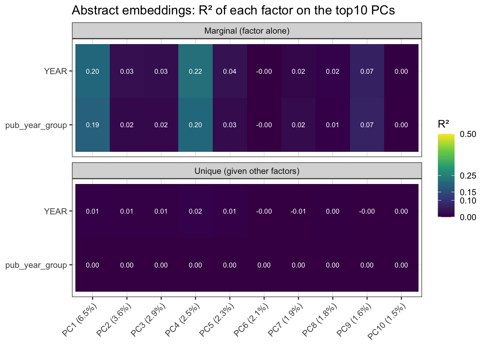
| Version | Author | Date |
|---|---|---|
| 13a47bf | IJbeasley | 2026-11-02 |
# A tibble: 2 × 3
factor marginal_R2 unique_R2
<chr> <dbl> <dbl>
1 YEAR 0.0857 0.00696
2 pub_year_group 0.0787 0 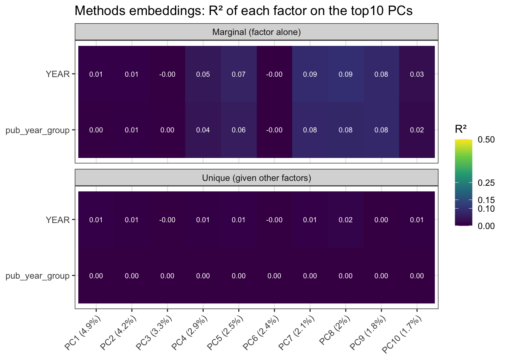
# A tibble: 2 × 3
factor marginal_R2 unique_R2
<chr> <dbl> <dbl>
1 YEAR 0.0350 0.00613
2 pub_year_group 0.0288 0 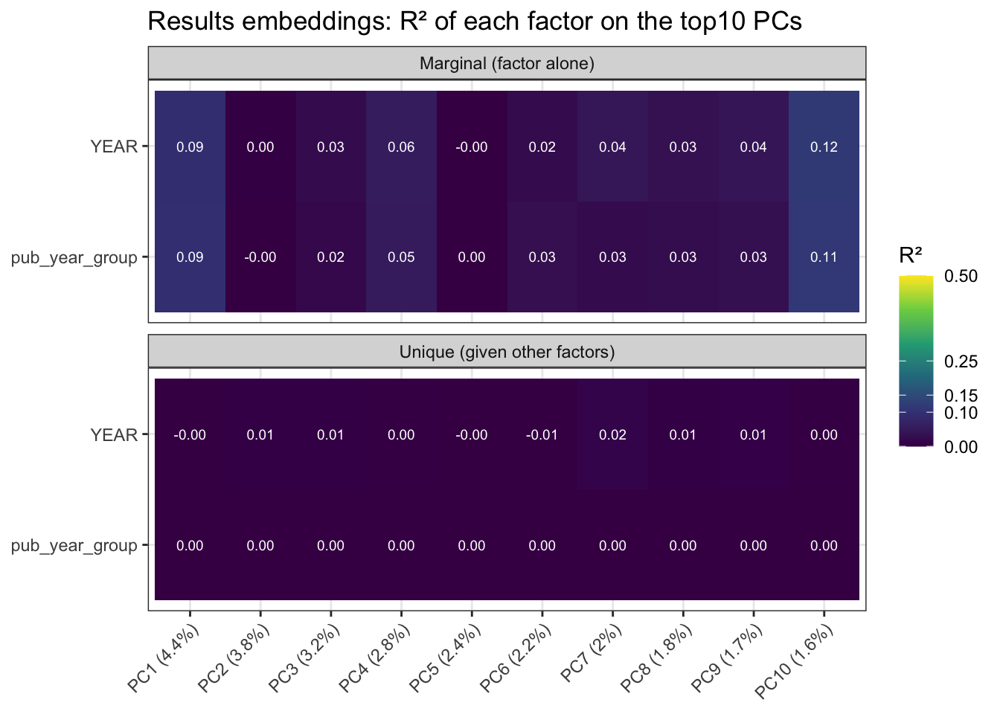
# A tibble: 2 × 3
factor marginal_R2 unique_R2
<chr> <dbl> <dbl>
1 YEAR 0.0419 0.00305
2 pub_year_group 0.0389 0 # pub_year_group explains a similar amount of variation in the embeddings as YEAR, so we can use it for downstream analyses
# drop the full YEAR covariate from the covariates data.frame to avoid collinearity in downstream analysesAncestry group vs percent European
paper_covariates <-
paper_covariates |>
mutate(ancestry_group = factor(ancestry_group)) |>
mutate(percent_euro_group = factor(percent_euro_group))
paper_covariates |> pull(ancestry_group) |> unique() |> length()[1] 7paper_covariates |> pull(ancestry_group) |> unique()[1] European Other Asian
[4] Hispanic/Latin American Not reported Multiple
[7] African
7 Levels: African Asian European Hispanic/Latin American ... Otherpaper_covariates |> pull(percent_euro_group) |> unique() |> length()[1] 6paper_covariates |> pull(percent_euro_group) |> unique()[1] Exclusively European Exclusively Non-European
[3] Not reported Multiple
[5] Multiple (Majority European) Multiple (Majority Non-European)
6 Levels: Exclusively European Exclusively Non-European ... Not reportedrun_compare_plot_r2(abstract_embeddings = abstract_embeddings,
methods_embeddings = methods_embeddings,
results_embeddings = results_embeddings,
paper_covariates = paper_covariates,
covariate_terms =c("ancestry_group",
"percent_euro_group",
"percent_euro"
)
)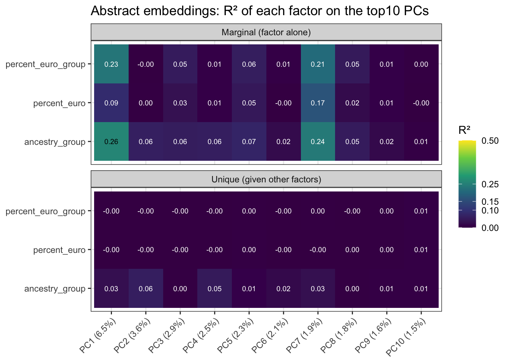
| Version | Author | Date |
|---|---|---|
| 13a47bf | IJbeasley | 2026-11-02 |
# A tibble: 3 × 3
factor marginal_R2 unique_R2
<chr> <dbl> <dbl>
1 ancestry_group 0.114 0.0261
2 percent_euro_group 0.0877 0.000533
3 percent_euro 0.0440 0.000439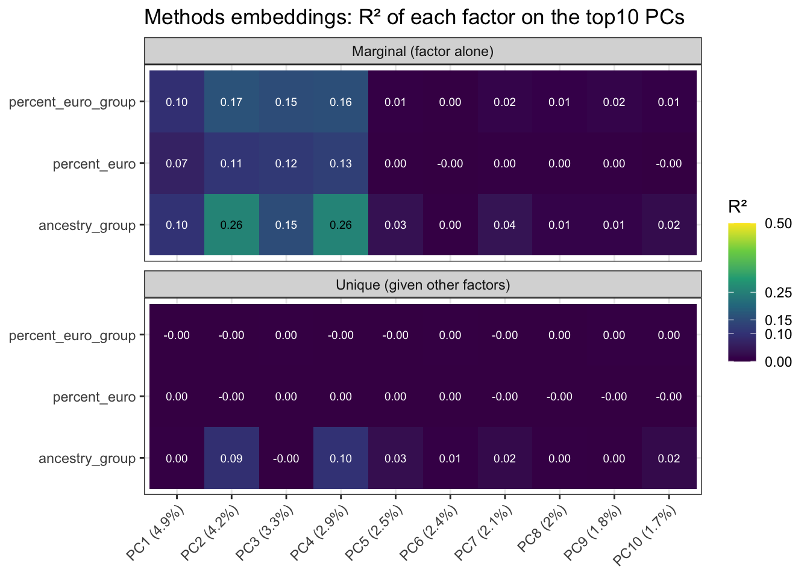
# A tibble: 3 × 3
factor marginal_R2 unique_R2
<chr> <dbl> <dbl>
1 ancestry_group 0.112 0.0317
2 percent_euro_group 0.0806 0.000421
3 percent_euro 0.0558 -0.0000144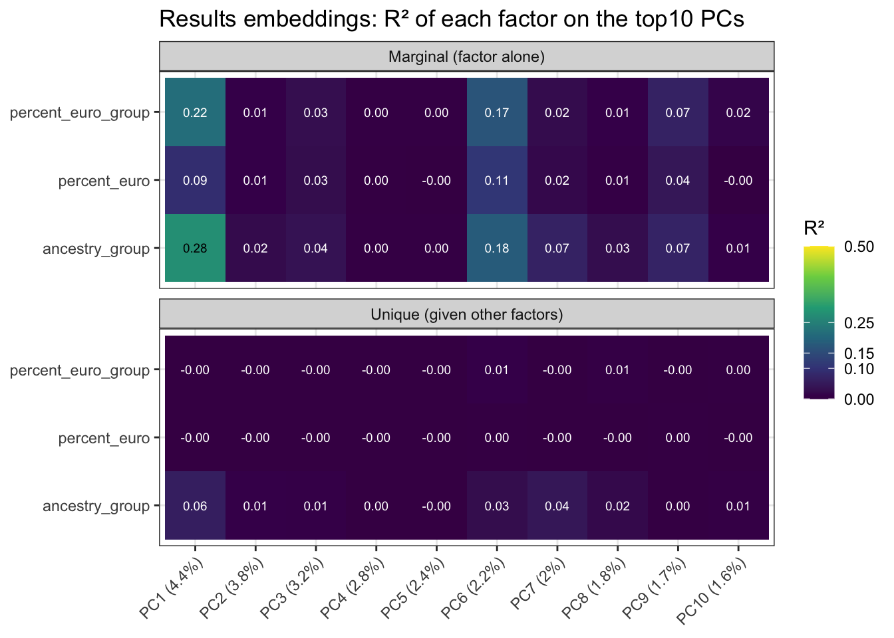
# A tibble: 3 × 3
factor marginal_R2 unique_R2
<chr> <dbl> <dbl>
1 ancestry_group 0.0842 0.0207
2 percent_euro_group 0.0655 0.000660
3 percent_euro 0.0346 -0.000132# ancestry_group explains more variation, so we can use it for downstream analysesPublisher group
paper_covariates <-
paper_covariates |>
mutate(publisher_supergroup = forcats::fct_lump_min(publisher_group,
min = 20,
other_level = "Other")
)
paper_covariates |> pull(publisher) |> unique() |> length()[1] 66paper_covariates |> pull(publisher) |> unique() [1] Elsevier BV
[2] Nature Portfolio
[3] American Diabetes Association
[4] American Association for the Advancement of Science
[5] Massachusetts Medical Society
[6] Blackwell Publishing
[7] BioMed Central
[8] Lippincott Williams & Wilkins
[9] Wiley
[10] Oxford University Press
[11] Public Library of Science
[12] Springer Nature
[13] American Association for Cancer Research
[14] Springer Science+Business Media
[15] American Society of Nephrology
[16] Emory University
[17] American Thoracic Society
[18] Hindawi Publishing Corporation
[19] Yonsei University College of Medicine
[20] Karger Publishers
[21] BMJ
[22] Genetics Society of America
[23] Taylor & Francis
[24] Frontiers Media
[25] American Medical Association
[26] De Gruyter Open
[27] European Respiratory Society
[28] Korea Genome Organization
[29] Japan Atherosclerosis Society
[30] Carden Jennings Publishing Co.
[31] American Physical Society
[32] Spandidos Publishing
[33] SAGE Publishing
[34] The Journal of Rheumatology Publishing Company Limited
[35] Impact Journals LLC
[36] National Academy of Sciences
[37] Mary Ann Liebert, Inc.
[38] Multidisciplinary Digital Publishing Institute
[39] PeerJ, Inc.
[40] Korean Association for the Study of the Liver
[41] Future Medicine
[42] Wolters Kluwer
[43] Korean Cancer Association
[44] International Scientific Information Inc.
[45] Springer International Publishing
[46] American Society for Microbiology
[47] Korean Society of Epidemiology
[48] Korean Diabetes Association
[49] Higher Education Press
[50] Stanford University Highwire Press
[51] Dove Medical Press
[52] e-Century Publishing Corporation
[53] Endocrine Society
[54] Baishideng Publishing Group Inc
[55] American Medical Informatics Association
[56] Via Medica
[57] eLife Sciences Publications Ltd
[58] American Psychiatric Association
[59] Bioscientifica
[60] Informa
[61] Cell Press
[62] Cambridge University Press
[63] AME Publishing Company
[64] University of Oxford
[65] Korean Society of Cardiology
[66] Cadmus Press
66 Levels: AME Publishing Company ... Yonsei University College of Medicinepaper_covariates |> pull(publisher_group) |> unique() |> length()[1] 16paper_covariates |> pull(publisher_group) |> unique() [1] Elsevier BV
[2] Springer Nature
[3] American Diabetes Association
[4] Other
[5] BioMed Central
[6] Lippincott Williams & Wilkins
[7] Wiley
[8] Oxford University Press
[9] Public Library of Science
[10] American Association for Cancer Research
[11] American Society of Nephrology
[12] American Thoracic Society
[13] BMJ
[14] Frontiers Media
[15] Multidisciplinary Digital Publishing Institute
[16] Wolters Kluwer
16 Levels: American Association for Cancer Research ...paper_covariates |> pull(publisher_supergroup) |> unique() |> length()[1] 11paper_covariates |> pull(publisher_supergroup) |> unique() [1] Elsevier BV
[2] Springer Nature
[3] American Diabetes Association
[4] Other
[5] BioMed Central
[6] Lippincott Williams & Wilkins
[7] Wiley
[8] Oxford University Press
[9] Public Library of Science
[10] Frontiers Media
[11] Multidisciplinary Digital Publishing Institute
11 Levels: American Diabetes Association BioMed Central ... Otherrun_compare_plot_r2(abstract_embeddings = abstract_embeddings,
methods_embeddings = methods_embeddings,
results_embeddings = results_embeddings,
paper_covariates = paper_covariates,
covariate_terms =c("publisher",
"publisher_group",
"publisher_supergroup"
)
)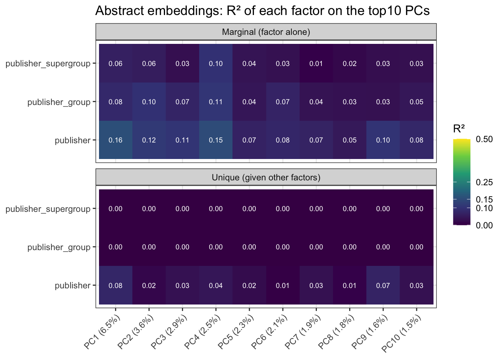
| Version | Author | Date |
|---|---|---|
| 13a47bf | IJbeasley | 2026-11-02 |
# A tibble: 3 × 3
factor marginal_R2 unique_R2
<chr> <dbl> <dbl>
1 publisher 0.110 0.0405
2 publisher_group 0.0695 0
3 publisher_supergroup 0.0471 0 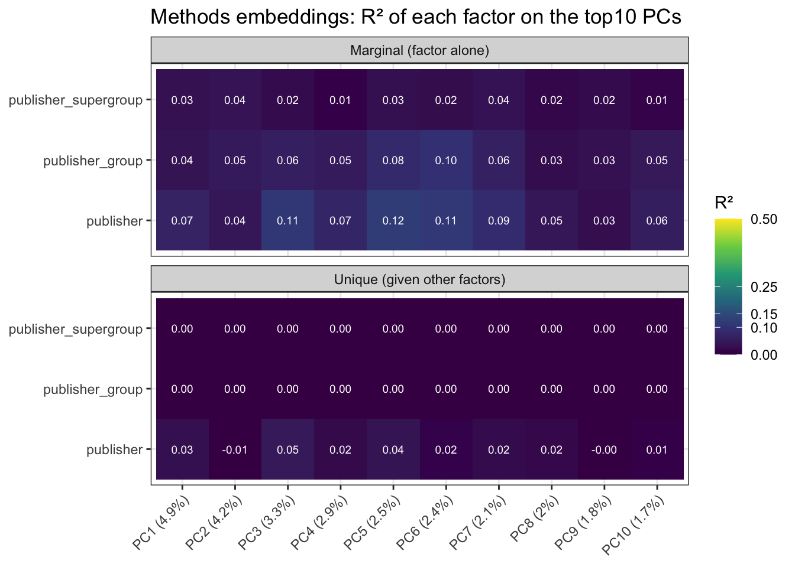
# A tibble: 3 × 3
factor marginal_R2 unique_R2
<chr> <dbl> <dbl>
1 publisher 0.0756 0.0203
2 publisher_group 0.0553 0
3 publisher_supergroup 0.0266 0
# A tibble: 3 × 3
factor marginal_R2 unique_R2
<chr> <dbl> <dbl>
1 publisher 0.0745 0.0242
2 publisher_group 0.0503 0
3 publisher_supergroup 0.0339 0 # publisher supergroup explains ~1/4 of the variation of publisher ...
# but publisher is way too granular to be useful for sampling training set
# at this stage, keep publisher_supergroup - but let's consider if a different grouping
# would more accurately capture the variation in the embeddings (e.g. publisher group, or publisher supergroup)
# ? possible part of reason publisher explains more variation is because it captures
# some of the disease grouping (e.g. disease specific society publishers)
run_compare_plot_r2(abstract_embeddings = abstract_embeddings,
methods_embeddings = methods_embeddings,
results_embeddings = results_embeddings,
paper_covariates = paper_covariates,
covariate_terms =c("publisher",
"lancet_condition_group"
)
)
| Version | Author | Date |
|---|---|---|
| 13a47bf | IJbeasley | 2026-11-02 |
# A tibble: 2 × 3
factor marginal_R2 unique_R2
<chr> <dbl> <dbl>
1 lancet_condition_group 0.234 0.198
2 publisher 0.110 0.0741
# A tibble: 2 × 3
factor marginal_R2 unique_R2
<chr> <dbl> <dbl>
1 lancet_condition_group 0.195 0.167
2 publisher 0.0756 0.0478
# A tibble: 2 × 3
factor marginal_R2 unique_R2
<chr> <dbl> <dbl>
1 lancet_condition_group 0.186 0.163
2 publisher 0.0745 0.0514# do they independently explain variation in the embeddings?
# yes, they appear toJournal and Condition Information
paper_covariates |> pull(journal) |> unique() |> length()[1] 293paper_covariates |> pull(journal_group) |> unique()[1] Cancer General Science/Medicine Diabetes/Nephrology
[4] Other Genetics/Genomics Cardiovascular
[7] Gastrointestinal Respiratory
8 Levels: Cancer Cardiovascular Diabetes/Nephrology ... Respiratorypaper_covariates |> pull(journal_group) |> unique() |> length()[1] 8run_compare_plot_r2(abstract_embeddings = abstract_embeddings,
methods_embeddings = methods_embeddings,
results_embeddings = results_embeddings,
paper_covariates = paper_covariates,
covariate_terms =c("journal",
"journal_group",
"h_index",
"two_yr_citedness",
"apc_usd",
"is_oa"
)
)
| Version | Author | Date |
|---|---|---|
| 13a47bf | IJbeasley | 2026-11-02 |
# A tibble: 6 × 3
factor marginal_R2 unique_R2
<chr> <dbl> <dbl>
1 journal 0.221 0.0724
2 journal_group 0.0947 0
3 two_yr_citedness 0.0530 0
4 apc_usd 0.0457 0
5 h_index 0.0343 0
6 is_oa 0.00659 0
# A tibble: 6 × 3
factor marginal_R2 unique_R2
<chr> <dbl> <dbl>
1 journal 0.156 0.0699
2 journal_group 0.0694 0
3 apc_usd 0.0149 0
4 two_yr_citedness 0.0121 0
5 h_index 0.00712 0
6 is_oa 0.00613 0
# A tibble: 6 × 3
factor marginal_R2 unique_R2
<chr> <dbl> <dbl>
1 journal 0.176 0.0647
2 journal_group 0.0735 0
3 two_yr_citedness 0.0376 0
4 apc_usd 0.0363 0
5 h_index 0.0248 0
6 is_oa 0.00793 0 # similarly, journal explains much more variation than journal group,
# but is too granular to be useful for sampling training set
# at this stage, keep journal_group over journal
# but possible future improvement: consider if a different grouping
# would more accurately capture the variation
# journal group is correlated with PC2, PC3 and similar PCs to lancet_condition_group,
# do they independently explain variation in the embeddings?
run_compare_plot_r2(abstract_embeddings = abstract_embeddings,
methods_embeddings = methods_embeddings,
results_embeddings = results_embeddings,
paper_covariates = paper_covariates,
covariate_terms =c("journal_group",
"lancet_condition_group"
)
)
| Version | Author | Date |
|---|---|---|
| 13a47bf | IJbeasley | 2026-11-02 |
# A tibble: 2 × 3
factor marginal_R2 unique_R2
<chr> <dbl> <dbl>
1 lancet_condition_group 0.234 0.150
2 journal_group 0.121 0.0372
# A tibble: 2 × 3
factor marginal_R2 unique_R2
<chr> <dbl> <dbl>
1 lancet_condition_group 0.195 0.122
2 journal_group 0.0994 0.0270
# A tibble: 2 × 3
factor marginal_R2 unique_R2
<chr> <dbl> <dbl>
1 lancet_condition_group 0.186 0.122
2 journal_group 0.0931 0.0295# most variation explained by journal group is also explained by lancet_condition_group,
# but lancet_condition_group explains more than journal group, so we can use lancet_condition_group for downstream analyses
# two year citness is highly skewed, can we get the same information by grouping into quartiles?
journal_quantile <-
paper_covariates |>
distinct(journal, two_yr_citedness) |>
mutate(log_two_year_citedness = log(two_yr_citedness + 1)) |>
mutate(two_yr_citedness_quartile =
case_when(
log_two_year_citedness < quantile(log_two_year_citedness,
0.25) ~ "Q1",
log_two_year_citedness < quantile(log_two_year_citedness,
0.5) ~ "Q2",
log_two_year_citedness < quantile(log_two_year_citedness,
0.75) ~ "Q3",
TRUE ~ "Q4"
))
paper_covariates <-
left_join(
paper_covariates,
journal_quantile,
by = c("journal", "two_yr_citedness")
)
run_compare_plot_r2(abstract_embeddings = abstract_embeddings,
methods_embeddings = methods_embeddings,
results_embeddings = results_embeddings,
paper_covariates = paper_covariates,
covariate_terms =c("two_yr_citedness",
"two_yr_citedness_quartile"
)
)
| Version | Author | Date |
|---|---|---|
| 13a47bf | IJbeasley | 2026-11-02 |
# A tibble: 2 × 3
factor marginal_R2 unique_R2
<chr> <dbl> <dbl>
1 two_yr_citedness_quartile 0.0422 0.0121
2 two_yr_citedness 0.0406 0.0104
# A tibble: 2 × 3
factor marginal_R2 unique_R2
<chr> <dbl> <dbl>
1 two_yr_citedness_quartile 0.0140 0.00689
2 two_yr_citedness 0.0103 0.00314
# A tibble: 2 × 3
factor marginal_R2 unique_R2
<chr> <dbl> <dbl>
1 two_yr_citedness 0.0297 0.00964
2 two_yr_citedness_quartile 0.0287 0.00871# two year citedness is correlated with PC1, similar to Year.
# do they independently explain variation in the embeddings?
run_compare_plot_r2(abstract_embeddings = abstract_embeddings,
methods_embeddings = methods_embeddings,
results_embeddings = results_embeddings,
paper_covariates = paper_covariates,
covariate_terms =c("pub_year_group",
"two_yr_citedness_quartile"
)
)
| Version | Author | Date |
|---|---|---|
| 13a47bf | IJbeasley | 2026-11-02 |
# A tibble: 2 × 3
factor marginal_R2 unique_R2
<chr> <dbl> <dbl>
1 pub_year_group 0.0787 0.0732
2 two_yr_citedness_quartile 0.0422 0.0368
# A tibble: 2 × 3
factor marginal_R2 unique_R2
<chr> <dbl> <dbl>
1 pub_year_group 0.0288 0.0261
2 two_yr_citedness_quartile 0.0140 0.0113
# A tibble: 2 × 3
factor marginal_R2 unique_R2
<chr> <dbl> <dbl>
1 pub_year_group 0.0389 0.0371
2 two_yr_citedness_quartile 0.0287 0.0269# yes, they appear to be relatively independent, so we can keep both for downstream analysesFull text source
paper_covariates |> pull(fulltext_source) |> unique() |> length()[1] 21paper_covariates |> pull(fulltext_source_group) |> unique() |> length()[1] 9paper_covariates |> pull(fulltext_source_group) |> unique() [1] Elsevier Other Publisher (HTML) No Full Text
[4] Ncbi Cloud Europe Pmc Other Publisher (PDF)
[7] Wiley Oxford (HTML) Sage
9 Levels: Europe Pmc Ncbi Cloud Elsevier Wiley Sage ... No Full Textpaper_covariates |> pull(fulltext_file_type) |> unique() |> length()[1] 4paper_covariates |> pull(fulltext_file_type) |> unique()[1] "XML" "BioC" "No full text" "PDF (TEI)" paper_covariates <-
paper_covariates |>
mutate(test_fulltext_source_group =
case_when(grepl("HTML", fulltext_source_group) ~ "HTML",
TRUE ~ fulltext_file_type))
run_compare_plot_r2(abstract_embeddings = abstract_embeddings,
methods_embeddings = methods_embeddings,
results_embeddings = results_embeddings,
paper_covariates = paper_covariates,
covariate_terms =c("fulltext_source",
"fulltext_source_group",
"fulltext_file_type"
)
)
| Version | Author | Date |
|---|---|---|
| 13a47bf | IJbeasley | 2026-11-02 |
# A tibble: 3 × 3
factor marginal_R2 unique_R2
<chr> <dbl> <dbl>
1 fulltext_source 0.0343 0.00573
2 fulltext_source_group 0.0286 0
3 fulltext_file_type 0.0170 0
# A tibble: 3 × 3
factor marginal_R2 unique_R2
<chr> <dbl> <dbl>
1 fulltext_source 0.0218 0.00355
2 fulltext_source_group 0.0183 0
3 fulltext_file_type 0.00714 0
# A tibble: 3 × 3
factor marginal_R2 unique_R2
<chr> <dbl> <dbl>
1 fulltext_source 0.0216 0.00232
2 fulltext_source_group 0.0193 0
3 fulltext_file_type 0.00928 0 run_compare_plot_r2(abstract_embeddings = abstract_embeddings,
methods_embeddings = methods_embeddings,
results_embeddings = results_embeddings,
paper_covariates = paper_covariates,
covariate_terms =c("fulltext_source_group",
"fulltext_file_type"
)
)
| Version | Author | Date |
|---|---|---|
| 13a47bf | IJbeasley | 2026-11-02 |
# A tibble: 2 × 3
factor marginal_R2 unique_R2
<chr> <dbl> <dbl>
1 fulltext_source_group 0.0286 0.0116
2 fulltext_file_type 0.0170 0
# A tibble: 2 × 3
factor marginal_R2 unique_R2
<chr> <dbl> <dbl>
1 fulltext_source_group 0.0183 0.0111
2 fulltext_file_type 0.00714 0
# A tibble: 2 × 3
factor marginal_R2 unique_R2
<chr> <dbl> <dbl>
1 fulltext_source_group 0.0193 0.0101
2 fulltext_file_type 0.00928 0 # these factors don't seem have independent explanatory power,
# fulltext_source_group explains slightly more than fulltext_file_type,
# but has many more levels than fulltext_file_type, so we can use fulltext_file_type for downstream analysesReducing the covariates to a representative set (from different groups)
covariate_terms <- c(
"pub_year_group",
"ancestry_group",
"publisher_supergroup",
"two_yr_citedness_quartile",
"lancet_condition_group",
"fulltext_file_type",
"meta_analysis"
)
run_compare_plot_r2(abstract_embeddings = abstract_embeddings,
methods_embeddings = methods_embeddings,
results_embeddings = results_embeddings,
paper_covariates = paper_covariates,
covariate_terms = covariate_terms
)
| Version | Author | Date |
|---|---|---|
| 13a47bf | IJbeasley | 2026-11-02 |
# A tibble: 7 × 3
factor marginal_R2 unique_R2
<chr> <dbl> <dbl>
1 lancet_condition_group 0.234 0.193
2 ancestry_group 0.114 0.0711
3 pub_year_group 0.0787 0.0483
4 publisher_supergroup 0.0471 0.0135
5 meta_analysis 0.0441 0.0144
6 two_yr_citedness_quartile 0.0422 0.00980
7 fulltext_file_type 0.0170 0.00239
# A tibble: 7 × 3
factor marginal_R2 unique_R2
<chr> <dbl> <dbl>
1 lancet_condition_group 0.195 0.162
2 ancestry_group 0.112 0.0829
3 pub_year_group 0.0288 0.0201
4 publisher_supergroup 0.0266 0.00937
5 meta_analysis 0.0250 0.00907
6 two_yr_citedness_quartile 0.0140 0.00286
7 fulltext_file_type 0.00714 0.00397
# A tibble: 7 × 3
factor marginal_R2 unique_R2
<chr> <dbl> <dbl>
1 lancet_condition_group 0.186 0.159
2 ancestry_group 0.0842 0.0571
3 meta_analysis 0.0435 0.0224
4 pub_year_group 0.0389 0.0252
5 publisher_supergroup 0.0339 0.00970
6 two_yr_citedness_quartile 0.0287 0.00974
7 fulltext_file_type 0.00928 0.00163# fulltext_file_type explains no more than 1% of independent variance per PC,
# so exclude.
# similarly, publisher_supergroup explains no more than 2% of independent variance per PC (usually less than 1%), so exclude.
# same as meta_analysis, explaining very little independent variance <3% per PC
covariate_terms <- c(
"pub_year_group",
"ancestry_group",
"two_yr_citedness_quartile",
"lancet_condition_group"
)
run_compare_plot_r2(abstract_embeddings = abstract_embeddings,
methods_embeddings = methods_embeddings,
results_embeddings = results_embeddings,
paper_covariates = paper_covariates,
covariate_terms = covariate_terms
)
| Version | Author | Date |
|---|---|---|
| 13a47bf | IJbeasley | 2026-11-02 |
# A tibble: 4 × 3
factor marginal_R2 unique_R2
<chr> <dbl> <dbl>
1 lancet_condition_group 0.234 0.210
2 ancestry_group 0.114 0.0818
3 pub_year_group 0.0787 0.0580
4 two_yr_citedness_quartile 0.0422 0.0246
# A tibble: 4 × 3
factor marginal_R2 unique_R2
<chr> <dbl> <dbl>
1 lancet_condition_group 0.195 0.176
2 ancestry_group 0.112 0.0921
3 pub_year_group 0.0288 0.0216
4 two_yr_citedness_quartile 0.0140 0.00662
# A tibble: 4 × 3
factor marginal_R2 unique_R2
<chr> <dbl> <dbl>
1 lancet_condition_group 0.186 0.170
2 ancestry_group 0.0842 0.0658
3 pub_year_group 0.0389 0.0299
4 two_yr_citedness_quartile 0.0287 0.0183# focusing on the major trends: top 5 PCs
run_compare_plot_r2(abstract_embeddings = abstract_embeddings,
methods_embeddings = methods_embeddings,
results_embeddings = results_embeddings,
paper_covariates = paper_covariates,
covariate_terms = covariate_terms,
n_pcs = 5
)
| Version | Author | Date |
|---|---|---|
| 13a47bf | IJbeasley | 2026-11-02 |
# A tibble: 4 × 3
factor marginal_R2 unique_R2
<chr> <dbl> <dbl>
1 lancet_condition_group 0.274 0.235
2 ancestry_group 0.135 0.0845
3 pub_year_group 0.108 0.0758
4 two_yr_citedness_quartile 0.0625 0.0364
# A tibble: 4 × 3
factor marginal_R2 unique_R2
<chr> <dbl> <dbl>
1 lancet_condition_group 0.232 0.207
2 ancestry_group 0.164 0.135
3 two_yr_citedness_quartile 0.0175 0.00742
4 pub_year_group 0.0172 0.0120 
# A tibble: 4 × 3
factor marginal_R2 unique_R2
<chr> <dbl> <dbl>
1 lancet_condition_group 0.189 0.172
2 ancestry_group 0.0873 0.0594
3 pub_year_group 0.0369 0.0280
4 two_yr_citedness_quartile 0.0363 0.0225# top 2 covariates: (unique_R2)
# abstracts: lancet_condition_group, pub_year_group
# methods: lancet_condition_group, ancestry_group
# results: lancet_condition_group, ancestry_group
covariate_terms <- c(
"pub_year_group",
"ancestry_group",
"two_yr_citedness_quartile",
"lancet_condition_group"
)
run_compare_plot_r2(abstract_embeddings = abstract_embeddings,
methods_embeddings = methods_embeddings,
results_embeddings = results_embeddings,
paper_covariates = paper_covariates,
covariate_terms = covariate_terms,
n_pcs = 5
)
| Version | Author | Date |
|---|---|---|
| 13a47bf | IJbeasley | 2026-11-02 |
# A tibble: 4 × 3
factor marginal_R2 unique_R2
<chr> <dbl> <dbl>
1 lancet_condition_group 0.274 0.235
2 ancestry_group 0.135 0.0845
3 pub_year_group 0.108 0.0758
4 two_yr_citedness_quartile 0.0625 0.0364
# A tibble: 4 × 3
factor marginal_R2 unique_R2
<chr> <dbl> <dbl>
1 lancet_condition_group 0.232 0.207
2 ancestry_group 0.164 0.135
3 two_yr_citedness_quartile 0.0175 0.00742
4 pub_year_group 0.0172 0.0120
# A tibble: 4 × 3
factor marginal_R2 unique_R2
<chr> <dbl> <dbl>
1 lancet_condition_group 0.189 0.172
2 ancestry_group 0.0873 0.0594
3 pub_year_group 0.0369 0.0280
4 two_yr_citedness_quartile 0.0363 0.0225# two year citedness independently explains essentially zero variation in methods, but ~5% in abstracts (~3% in results)
# it is the least independently explainatory of the remaining factors, so let's drop itSummary - what covariates selected?
covariate_terms <- c(
"pub_year_group",
"ancestry_group",
"lancet_condition_group"
)
run_compare_plot_r2(abstract_embeddings = abstract_embeddings,
methods_embeddings = methods_embeddings,
results_embeddings = results_embeddings,
paper_covariates = paper_covariates,
covariate_terms = covariate_terms,
n_pcs = 5
)
| Version | Author | Date |
|---|---|---|
| 13a47bf | IJbeasley | 2026-11-02 |
# A tibble: 3 × 3
factor marginal_R2 unique_R2
<chr> <dbl> <dbl>
1 lancet_condition_group 0.274 0.240
2 ancestry_group 0.135 0.101
3 pub_year_group 0.108 0.0781
# A tibble: 3 × 3
factor marginal_R2 unique_R2
<chr> <dbl> <dbl>
1 lancet_condition_group 0.232 0.208
2 ancestry_group 0.164 0.142
3 pub_year_group 0.0172 0.0125
# A tibble: 3 × 3
factor marginal_R2 unique_R2
<chr> <dbl> <dbl>
1 lancet_condition_group 0.189 0.175
2 ancestry_group 0.0873 0.0706
3 pub_year_group 0.0369 0.0281full_permanova_results <-
run_compare_permanova(abstract_embeddings = abstract_embeddings,
methods_embeddings = methods_embeddings,
results_embeddings = results_embeddings,
paper_covariates = paper_covariates,
covariate_terms =covariate_terms,
return_tables = TRUE,
permutations = 1000
)[1] "Abstracts PERMANOVA results:"
# A tibble: 3 × 5
factor marginal_R2 marginal_p unique_R2 unique_p
<chr> <dbl> <dbl> <dbl> <dbl>
1 lancet_condition_group 0.0680 0.000999 0.0619 0.000999
2 ancestry_group 0.0407 0.000999 0.0344 0.000999
3 pub_year_group 0.0255 0.000999 0.0199 0.000999
[1] "Methods PERMANOVA results:"
# A tibble: 3 × 5
factor marginal_R2 marginal_p unique_R2 unique_p
<chr> <dbl> <dbl> <dbl> <dbl>
1 lancet_condition_group 0.0614 0.000999 0.0566 0.000999
2 ancestry_group 0.0427 0.000999 0.0382 0.000999
3 pub_year_group 0.0130 0.000999 0.0111 0.000999
[1] "Results PERMANOVA results:"
# A tibble: 3 × 5
factor marginal_R2 marginal_p unique_R2 unique_p
<chr> <dbl> <dbl> <dbl> <dbl>
1 lancet_condition_group 0.0535 0.000999 0.0499 0.000999
2 ancestry_group 0.0316 0.000999 0.0282 0.000999
3 pub_year_group 0.0151 0.000999 0.0128 0.000999bind_rows(
full_permanova_results$abstract |> mutate(text = "Abstracts"),
full_permanova_results$methods |> mutate(text = "Methods"),
full_permanova_results$results |> mutate(text = "Results")
) |>
tidyr::pivot_longer(c(marginal_R2, unique_R2),
names_to = "type", values_to = "R2") |>
mutate(type = recode(type,
marginal_R2 = "Marginal (factor alone)",
unique_R2 = "Unique (given other factors)")) |>
mutate(factor = recode(factor,
pub_year_group = "Publication year (grouped)",
ancestry_group = "Sample ancestry group",
lancet_condition_group = "Disease category")) |>
ggplot(aes(x = R2, y = reorder(factor, R2), fill = type)) +
geom_col(position = "dodge") +
scale_fill_brewer(palette = "Paired") +
facet_wrap(~text) +
labs(x = "PERMANOVA R² (share of embedding variation)", y = NULL, fill = NULL) +
theme_bw() +
theme(legend.position = "bottom")
Create the training and validation sets
Training set
set.seed(500)
paper_covariates |>
select(PUBMED_ID,
all_of(covariate_terms)
) |>
distinct() |>
group_by(lancet_condition_group,
ancestry_group,
pub_year_group) |>
summarise(n = n(), .groups = "drop") |>
nrow()[1] 96training_sample = paper_covariates |>
select(PUBMED_ID,
all_of(covariate_terms)
) |>
distinct()
training_sample <-
training_sample |>
group_by(lancet_condition_group,
ancestry_group,
pub_year_group) |>
slice_sample(n = 1,
replace = FALSE) |>
pull(PUBMED_ID)
print("Number of selected training pubmed ids for disease studies:")[1] "Number of selected training pubmed ids for disease studies:"training_sample |>
unique() |>
length()[1] 96writeLines(
as.character(training_sample),
here::here("output/gwas_cat/training_set_pmids_v2.txt"))Validation set
# now let's select a random set of papers for the validation set
# the number of papers in the validation set should be ~ 20% of the training set
0.2 * length(training_sample) # ~ 19 papers[1] 19.2validation_set <-
paper_covariates |>
distinct(PUBMED_ID) |>
filter(!PUBMED_ID %in% training_sample) |>
slice_sample(n = 19, replace = FALSE) |>
pull(PUBMED_ID)
writeLines(
as.character(validation_set),
here::here("output/gwas_cat/validation_set_pmids.txt"))
sessionInfo()R version 4.3.2 (2023-10-31)
Platform: aarch64-apple-darwin20 (64-bit)
Running under: macOS 26.7.2
Matrix products: default
BLAS: /Library/Frameworks/R.framework/Versions/4.3-arm64/Resources/lib/libRblas.0.dylib
LAPACK: /Library/Frameworks/R.framework/Versions/4.3-arm64/Resources/lib/libRlapack.dylib; LAPACK version 3.11.0
locale:
[1] en_US.UTF-8/en_US.UTF-8/en_US.UTF-8/C/en_US.UTF-8/en_US.UTF-8
time zone: America/Los_Angeles
tzcode source: internal
attached base packages:
[1] grid stats graphics grDevices datasets utils methods
[8] base
other attached packages:
[1] vegan_2.7-6 permute_0.9-10 purrr_1.2.2
[4] jsonlite_2.0.0 httr_1.4.7 ComplexHeatmap_2.18.0
[7] plotly_4.11.0 ggplot2_4.0.3 dplyr_1.2.1
[10] readxl_1.4.5 stringr_1.6.0 workflowr_1.7.2
loaded via a namespace (and not attached):
[1] tidyselect_1.2.1 viridisLite_0.4.3 farver_2.1.2
[4] S7_0.2.2 fastmap_1.2.0 lazyeval_0.2.2
[7] promises_1.3.3 digest_0.6.37 timechange_0.3.0
[10] lifecycle_1.0.5 cluster_2.1.4 processx_3.8.6
[13] magrittr_2.0.5 compiler_4.3.2 rlang_1.3.0
[16] sass_0.4.10 tools_4.3.2 utf8_1.2.6
[19] yaml_2.3.10 data.table_1.17.8 knitr_1.50
[22] labeling_0.4.3 htmlwidgets_1.6.4 here_1.0.1
[25] RColorBrewer_1.1-3 withr_3.0.3 BiocGenerics_0.48.1
[28] stats4_4.3.2 git2r_0.36.2 colorspace_2.1-2
[31] MASS_7.3-60 scales_1.4.0 iterators_1.0.14
[34] cli_3.6.6 rmarkdown_2.30 crayon_1.5.3
[37] generics_0.1.4 rstudioapi_0.17.1 rjson_0.2.23
[40] cachem_1.1.0 splines_4.3.2 parallel_4.3.2
[43] BiocManager_1.30.26 cellranger_1.1.0 matrixStats_1.5.0
[46] vctrs_0.7.3 Matrix_1.5-4.1 callr_3.7.6
[49] IRanges_2.36.0 GetoptLong_1.0.5 S4Vectors_0.40.2
[52] clue_0.3-66 foreach_1.5.2 tidyr_1.3.2
[55] jquerylib_0.1.4 glue_1.8.1 codetools_0.2-19
[58] ps_1.9.1 lubridate_1.9.4 stringi_1.8.9
[61] gtable_0.3.6 shape_1.4.6.1 later_1.4.4
[64] tibble_3.3.1 pillar_1.11.1 htmltools_0.5.8.1
[67] circlize_0.4.16 R6_2.6.1 doParallel_1.0.17
[70] rprojroot_2.1.0 lattice_0.21-8 evaluate_1.0.5
[73] png_0.1-8 renv_1.1.8 httpuv_1.6.16
[76] bslib_0.9.0 Rcpp_1.1.0 nlme_3.1-163
[79] mgcv_1.9-0 whisker_0.4.1 xfun_0.55
[82] fs_1.6.6 forcats_1.0.1 getPass_0.2-4
[85] pkgconfig_2.0.3 GlobalOptions_0.1.2